Álvaro Ramírez
# Basic Emacs keybindings on Linux desktop
Miss C-a, C-e in your browser and other Linux apps? You can enable the GTK Emacs key theme:
$ gsettings set org.gnome.desktop.interface gtk-key-theme "Emacs"
or if on Cinnamon:
$ gsettings set org.cinnamon.desktop.interface gtk-key-theme Emacs
If your desktop environment is not running gnome-settings-daemon, start it with:
$ gnome-settings-daemon
More at Emacs Keybindings in Chrome Without Gnome and How to get Emacs key bindings in Ubuntu.
# Emacs Objective-C completion
Install libclang on Mac
brew install llvm --with-clang
Configure Emacs
(use-package irony :ensure t :config (add-hook 'objc-mode-hook 'irony-mode) (add-hook 'irony-mode-hook 'irony-cdb-autosetup-compile-options)) (use-package company-irony :ensure t :config (add-hook 'objc-mode-hook (lambda () (setq-local company-backends '((company-irony))))) (add-hook 'irony-mode-hook 'company-irony-setup-begin-commands))
Compilation database
Install xctool
brew install xctool
Generate compilation database
xctool -scheme SomeScheme -reporter json-compilation-database:compile_commands.json clean build
Set Irony's database path
M-x irony-cdb-json-add-compile-commands-path
# Finland travel bookmarks
- Rovaniemi for reindeer, dog sled, santaland, artic circle photos.
# Northern lights travel bookmarks
- Aim for a new moon (eg. 2016-01-10 or 2016-02-08).
- Aim for auroral zone.
- Guide Gunnar will go distance to ensure you see the lights.
- Kiruna Sleddog Tours.
- Tromsø's reindeer racing.
- Tromsø.
- Hundekjøring: drive your own sled.
- Tromsø whale watching.
# Mexico travel bookmarks
# Emacs highlight-symbol-mode
Been a fan of highlight-thing-mode. It automatically highlights all instances of symbol at point. Today, I gave highlight-symbol a try. Similar concept, but also adds the ability to jump to next/previous instances of symbol at point.
(use-package highlight-symbol :ensure t :config (set-face-attribute 'highlight-symbol-face nil :background "default" :foreground "#FA009A") (setq highlight-symbol-idle-delay 0) (setq highlight-symbol-on-navigation-p t) (add-hook 'prog-mode-hook #'highlight-symbol-mode) (add-hook 'prog-mode-hook #'highlight-symbol-nav-mode))
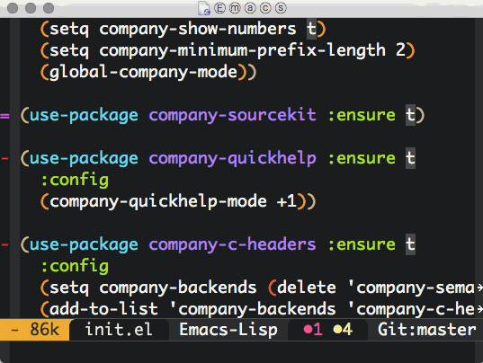
# Gandhi's ever-contemporary wisdom
Anger
"I do get angry, but I feel angry with myself for it. Full conquest of anger is possible only through self-realization. We should love even those who have the worst opinion of us. This is ahimsa, the rest is only ignorance."
Bad handwriting
"I am now of opinion that children should first be taught the art of drawing before learning how to write. Let the child learn his letters by observation as he does different objectives, such as flowers, birds, etc., and let him learn handwriting only after he has learned to draw objects."
Conduct of the Ashram
"Service without humility is selfishness and egotism."
Eating
"There is a great deal of truth in the saying that man becomes what he eats. The grosser the food, the grosser the body."
Heart
"There are chords in every human heart. If we only know how to strike the right chord, we bring out the music."
Moral law
The law of truth and love.
Renouncing or forgoing
Nishkulanand sings: "Renunciation of objects, without the renunciation of desires, is short-lived, however hard you may try."
Silence
"Man spoils matters much more by speech than by silence."
Time
"Every minute that runs to waste never returns. Yet, knowing this, how much time do we waste?"
The palate
"Turn to the birds and beasts, and what do you find? They never eat merely to please the palate, they never go on eating till their inside is full to overflowing. And yet, we regard ourselves as superior to the animal creation!"
Vow of Swadeshi
"The person who has taken the vow of swadeshi will never use articles which conceivably involve violation of truth in their manufature or on the part of their manufacturers."
# Functional programming bookmarks
# 9 Productivity tips
From HBR's 9 Productivity Tips from People Who Write About Productivity:
- Block time away from reactive tasks (email).
- Business = wasted energy.
- Exercise, sleep, and 90 minute work bursts.
- Incomplete tasks prompt healthy thinking out of context.
- Time off or stepping back is invaluable.
- Genuinely help were most successful/enjoyable.
- Plan for saying no while highlighting priority and seeking feedback.
- Measure important behavior change.
- Make time now (automate, simplify, etc.).
# First meal of 2016
Pancakes
- 1 teaspoon of salt.
- 1.5 cups of milk.
- 2 cups of flour.
- 2 eggs.
- 2 tablespoons sugar.
- 4 tablespoons of melted butter.
- 6 teaspoons of baking powder.
Makes 10/11 pancakes.
# Last meal of 2015
For our last meal of 2015, I contributed dal and rotis. This is my first attempt at making either one of these. Both recipes based on Anupy Singla's Indian for Everyone.
Dal Makhani (Buttered black lentils)
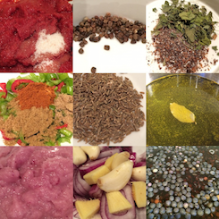
Roti-Chapati-Phulka
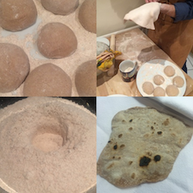
# Find in $PATH with type and which
I typically use which to figure out the first binary found in $PATH:
which -a emacsclient
/Users/user/homebrew/bin/emacsclient /usr/bin/emacsclient
I always forget about type though:
type -a emacsclient
emacsclient is /Users/user/homebrew/bin/emacsclient emacsclient is /usr/bin/emacsclient
# npm basics
Global vs local package installation location
{prefix}/lib/node_modules
vs
path/to/project/node_modules
View npm config
npm config list
; cli configs user-agent = "npm/2.14.2 node/v4.0.0 darwin x64" ; node bin location = /Users/user/.nvm/versions/node/v4.0.0/bin/node ; cwd = /Users/user/stuff/active/blog ; HOME = /Users/user ; 'npm config ls -l' to show all defaults.
Get config value
npm config get prefix
/Users/user/.nvm/versions/node/v4.0.0
Set config value
npm config set prefix=$HOME/some/location
Install package globally
node install --global <package-name>
or
node install -g <package-name>
List global packages
npm list --global
You can also use –depth=0 to make less verbose.
/Users/user/.nvm/versions/node/v4.0.0/lib ├─┬ babel-eslint@4.1.3 │ ├── acorn-to-esprima@1.0.4 │ ├─┬ babel-core@5.8.25 │ │ ├── babel-plugin-constant-folding@1.0.1 │ │ ├── babel-plugin-dead-code-elimination@1.0.2 ...
Install local package
npm install <package-name> --save
–save will add <package-name> dependency to your package.json.
package.json
See using a package.json.
Uninstall package
npm uninstall <package-name>
Install package at version
npm install <package-name>@1.7.0
Search packages
npm search linter
Online documentation
Online documentation is great so far. More at docs.npmjs.com.
# Clojure bookmarks
# Search bash history with Emacs helm
Following up from changing CWD with helm projectile, here's a way to search your bash history with helm:
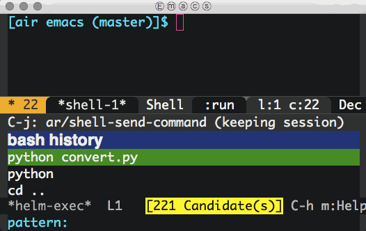
(defun ar/helm-helm (title candidates on-select-function) "Helm with TITLE CANDIDATES and ON-SELECT-FUNCTION." (helm :sources `((name . ,title) (candidates . ,candidates) (action . ,on-select-function)) :buffer "*helm-exec*" :candidate-number-limit 10000)) (defun ar/shell-send-command (command) "Send COMMAND to shell mode." (assert (string-equal mode-name "Shell") nil "Not in Shell mode") (goto-char (point-max)) (comint-kill-input) (insert command) (comint-send-input)) (defun ar/helm-shell-search-history () "Narrow down bash history with helm." (interactive) (assert (string-equal mode-name "Shell") nil "Not in Shell mode") (ar/helm-helm "bash history" (with-temp-buffer (insert-file-contents "~/.bash_history") (reverse (delete-dups (split-string (buffer-string) "\n")))) #'ar/shell-send-command))
Bonus: Replace existing M-r binding to use ar/helm-shell-search-history.
(bind-key "M-r" #'ar/helm-shell-search-history shell-mode-map)
# View DICOM files from your X-ray
Got a CD with my chest X-ray from the hospital. Was expecting a pdf or an image of sorts, but the CD content was rather different. For starters, it was targeted at Windows users (AUTORUN.INF, MediaViewerLauncher.EXE and a bunch of DLLs):
$ find . -exec file --mime-type '{}' \;
./AUTORUN.INF: text/plain
./DICOMDIR: application/dicom
./MediaViewerLauncher.EXE: application/octet-stream
...
./Libraries/BASEPRINTER.DLL: application/octet-stream
./Libraries/CDDATABURNER.DLL: application/octet-stream
./Libraries/COM.DLL: application/octet-stream
...
./Libraries/ACE.DLL: application/octet-stream
./Libraries/ACE_SSL.DLL: application/octet-stream
./Libraries/ATL90.DLL: application/octet-stream
...
./DICOM/PAT_0000: application/x-directory
./DICOM/PAT_0000/STD_0000/SER_0000/OBJ_0001/IM_0001: application/dicom
./DICOM/PAT_0000/STD_0000/SER_0001/OBJ_0001/ED_0001: application/dicom
./DICOM/PAT_0000/STD_0000/SER_0002/OBJ_0001/ED_0001: application/dicom
./Worklist/ClinicalInfo/067eccde-b299-e511-9114-005056ad3afe.mht: text/html
./Worklist/Report/067eccde-b299-e511-9114-005056ad3afe.mht: text/html
./Worklist/Worklist.wl: application/octet-stream
I'm on a Mac, so most of these files were not useful to me. The more interesting files were IM_0001 and ED_0001 with "application/dicom" MIME type. DICOM files stand for Digital Imaging and Communications in Medicine. How to view these on a Mac? OsiriX viewer is an option. OsiriX, though on the heavy side (100.7MB download), it rendered the X-ray successfully.
Unsurprisingly, ImageMagick's convert utility also handles DICOM files. Converting to PNG worked well.
$ convert ./DICOM/PAT_0000/STD_0000/SER_0001/OBJ_0001/ED_0001 ED_0001.png
DICOM files also hold patient's metadata and optional reports. The file format is well known. OsiriX gives you access to it, but a few lines of python can also extract it for you. First install the pydicom package:
$ sudo pip install pydicom
Running the python interpreter is enough to peak at the metadata:
>>> import dicom >>> ds = dicom.read_file("./DICOM/PAT_0000/STD_0000/SER_0000/OBJ_0001/IM_0001") >>> ds
(0008, 0000) Group Length UL: 400 (0008, 0005) Specific Character Set CS: 'ISO_IR 100' (0008, 0016) SOP Class UID UI: Computed Radiography Image Storage (0008, 0020) Study Date DA: '20151203' (0008, 0021) Series Date DA: '20151203' (0008, 0023) Content Date DA: '20151203' (0008, 0030) Study Time TM: '120519.000000' (0008, 0031) Series Time TM: '120520.000000' (0008, 0033) Content Time TM: '120643.000000' (0008, 0060) Modality CS: 'CR' (0008, 0070) Manufacturer LO: 'Canon Inc.' ...
There were other DICOM files with a report:
>>> import dicom >>> ds = dicom.read_file("./DICOM/PAT_0000/STD_0000/SER_0001/OBJ_0001/ED_0001") >>> ds
(0008, 0005) Specific Character Set CS: 'ISO_IR 100' (0008, 0016) SOP Class UID UI: Encapsulated PDF Storage ... (0042, 0012) MIME Type of Encapsulated Document LO: 'application/pdf'
DCMTK is another alternative tool to extract DICOM metadata. The source is available and can be built:
$ tar xf dcmtk-3.6.0.tar.gz $ cd dcmtk-3.6.0 $ cmake . $ make
Or installed via homebrew:
$ brew install dcmtk
DCMTK includes dcmdump. You can use it to dump DICOM files:
$ dcmdata/apps/dcmdump DICOM/PAT_0000/STD_0000/SER_0000/OBJ_0001/IM_0001
# Dicom-File-Format # Dicom-Meta-Information-Header # Used TransferSyntax: Little Endian Explicit (0002,0000) UL 192 # 4, 1 FileMetaInformationGroupLength (0002,0001) OB 01\00 # 2, 1 FileMetaInformationVersion (0002,0002) UI =ComputedRadiographyImageStorage # 26, 1 MediaStorageSOPClassUID (0002,0003) UI [1.2.392.200046.100.2.1.1.42667.20151203120519.1.1.1] # 52, 1 MediaStorageSOPInstanceUID (0002,0010) UI =LittleEndianExplicit # 20, 1 TransferSyntaxUID (0002,0012) UI [1.3.46.670589.42.1.4.4.5] # 24, 1 ImplementationClassUID (0002,0013) SH [PhilipsISPACS445] # 16, 1 ImplementationVersionName ...
Of interest, David Clunie's Medical Image Format Site.
# Tip: GOOGLETRANSLATE your Spreadsheet
Examples from reference:
=GOOGLETRANSLATE("Hello World","en","es")
=GOOGLETRANSLATE(A2,B2,C2)
=GOOGLETRANSLATE(A2)
# Organize your data with camlistore
Checking out camlistore to organize all sorts of data. Scaleway enables you to deploy camlistore servers.
# Open Street Maps bookmarks
# Use ImageMagick to convert image to grayscale
Another ImageMagick one-liner I'll likely forget.
mogrify -type Grayscale image.png
# Drill down Emacs dired with dired-subtree
JCS, from Irreal, recently highlighted fuco's dired-hacks. dired-subtree is super handy for drilling subdirectories down. Bound <tab> and <backtab> to toggle and cycle subtrees.
(use-package dired-subtree :ensure t :after dired :config (bind-key "<tab>" #'dired-subtree-toggle dired-mode-map) (bind-key "<backtab>" #'dired-subtree-cycle dired-mode-map))
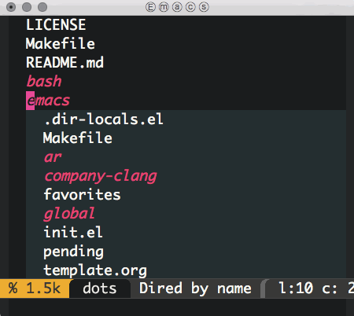
# CSS bookmarks
- CSS Protips: A collection of tips to help take your CSS skills pro (Hacker News).
- CSS Protips: A collection of tips to help take your CSS skills pro.
- CSS style guide.
- CSStickyHeaderFlowLayout.
- Dynamics.js: JavaScript library to create physics-based CSS animations.
- Flexbox Froggy, a game for writing CSS code.
- Howtocenterincss.com (Hacker News).
- Howtocenterincss.com.
# Resume partial downloads with ssh and rsync
rsync --rsync-path=/usr/local/bin/rsync \ --partial \ --progress \ --rsh=ssh \ john@host:/path/to/file \ path/to/partial/file
# Emacs text faces
- Text faces = Text styles.
- Face attributes: font, height, weight, slant, foreground/background color, and underlining or overlining.
- Font lock mode automatically assigns faces to text.
- M-x list-faces-display: Shows faces defined.
- M-x helm-colors: Also handy.
- Unspecified attributes are taken from 'default' face.
# Preview HTML pages on github
# Flutter setup
Based on Getting Started with Flutter.
$ curl -O https://storage.googleapis.com/dart-archive/channels/stable/release/1.13.0/sdk/dartsdk-macos-x64-release.zip $ unzip dartsdk-macos-x64-release.zip $ export PATH=`pwd`/dart-sdk/bin:$PATH
Verify with:
$ pub --version
# Playing with Dart's analysis server
Dart SDK ships with an analysis server. Very handy if you'd like to write a completion plugin for your favorite editor. The API is well documented. Of interest, there's LocalDartServer.java, part of dartedit.
$ dart path/to/bin/snapshots/analysis_server.dart.snapshot --sdk=path/to/dart-sdk
NOTE: The server reads requests from standard input. Either escape or execute the following as one-liner json requests.
{ "id": "1", "method": "analysis.setAnalysisRoots", "params": { "included": [ "path/to/your/dart/project" ], "excluded": [] } }
{ "id": "3", "method": "completion.getSuggestions", "params": { "file": "path/to/some/file.dart", "offset": 673 } }
# Dart bookmarks
# iOS app awesome libs bookmarks
# Flutter bookmarks
# Swift bookmarks
# Installing Emacs spaceline
Gave Spaceline a try. Spacemacs's powerline theme. Setup was super simple (Thanks Eivind Fonn and Sylvain Benner):
(use-package spaceline :ensure t :config (use-package spaceline-config :config (spaceline-toggle-minor-modes-off) (spaceline-toggle-buffer-encoding-off) (spaceline-toggle-buffer-encoding-abbrev-off) (setq powerline-default-separator 'rounded) (setq spaceline-highlight-face-func 'spaceline-highlight-face-evil-state) (spaceline-define-segment line-column "The current line and column numbers." "l:%l c:%2c") (spaceline-define-segment time "The current time." (format-time-string "%H:%M")) (spaceline-define-segment date "The current date." (format-time-string "%h %d")) (spaceline-toggle-time-on) (spaceline-emacs-theme 'date 'time))
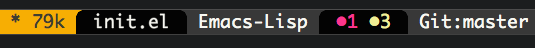
# package.el incomprehensible buffer
Came across "incomprehensible buffer" error in package.el. Workaround patch:
--- a/lisp/emacs-lisp/package.el +++ b/lisp/emacs-lisp/package.el @@ -1161,6 +1161,7 @@ package--with-work-buffer (let* ((url (concat ,url-1 ,file)) (callback (lambda (status) (let ((b (current-buffer))) + (goto-char (point-min)) (unwind-protect (wrap-errors (when-let ((er (plist-get status :error))) (error "Error retrieving: %s %S" url er))
# Leading bookmarks
- Ask HN: How to Be a Good Technical Lead? (Hacker News).
- Do You Have a Manager’s Mindset?.
- First Timers Only: A suggestion to Open Source project maintainers.
- How to Give Tough Feedback That Helps People Grow.
- Shifting from Star Performer to Star Manager.
- The Joel Test: 12 Steps to Better Code.
- The Manager as Debugger.
# Online reading backlog
- TODO Emacs.el episode 3.
- TODO Be Grateful More Often.
- TODO GTD sucks for creative work.
- TODO Land, Capital, Attention: This Time it Is the Same.
- TODO Mindset: What You Believe Affects What You Achieve (Gates Notes).
- TODO Redux: The Single Immutable State Tree screencast.
- TODO The Case for Getting Rid of Borders—Completely.
- TODO The Ultimate Guide to Personal Productivity Methods.
- TODO Thing Explainer: A Basic Guide for Curious Minds (Gates Notes).
- TODO Your body language shapes who you are.
# Travel apps bookmarks
# Travel lifestyle bookmarks
# SQL bookmarks
# Unix/Linux tools bookmarks
# Couchbase React Native bookmarks
# Installing Emacs 25 devel on Mac OS X
Stable
brew update brew install emacs --HEAD --with-cocoa --with-gnutls
Development
brew update brew install emacs --devel --with-cocoa --with-gnutls
Had problems loading seq. Removed byte-compiled packages:
$ find ~/.emacs.d/elpa -iname *.elc -exec rm '{}' \;
# Diagram tools bookmarks
# Licensing bookmarks
- choosealicense.com (Choosing an open source license doesn’t need to be scary).
- choosealicense.com (github).
- tldrlegal.com (Software Licenses in Plain English).
# Backup bookmarks
# Making hummus
Made hummus, based on Delicious Istanbul's 5 Secrets to Perfect Hummus post.
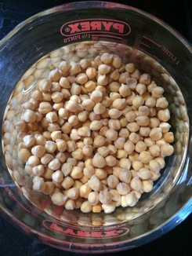 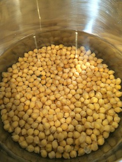 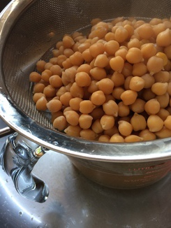 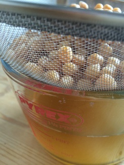 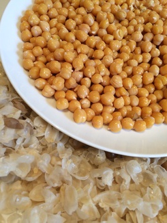  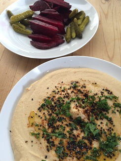
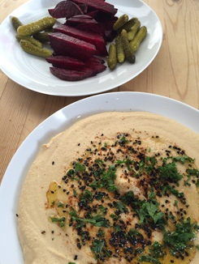
# Nara travel bookmarks
# Docker bookmarks
# Angular bookmarks
# Mac OS bookmarks
- Customizing the Cocoa Text System.
- Customizing the Cocoa Text System (github).
- DaisyDisk (what's taking up your disk space).
# easy_install->pip->conda
Spotted Conda package manager. It handles python installations, in addition to package management. There's also a package index provided by Binstar. Installed Miniconda, the bare bones Conda environment.
Can't find a python package in Binstar? Here's a post on Using PyPi Packages with Conda. If that fails, you can try pip from your Conda python environment.
# Traditional music bookmarks
# Recover from an unresponsive Emacs
Wilfred Hughes has a handy tip to bail you out of a hung Emacs instance:
pkill -SIGUSR2 emacs
ps. Not had a chance to try it, but next time it happens…
# Training for under 50 min 10k run
Not much training time for an under 50 minute 10k run, but here's an attempt (based on time-to-run's sub-50):
| Mon | Tue | Wed | Thu | Fri | Sat | Sun |
|---|---|---|---|---|---|---|
| Oct 26 | Oct 27 | Oct 28 | Oct 29 | Oct 30 | Oct 31 | Nov 1 |
| 60 min | 30 min | 2k @ 4.55/k | rest | 105 min | ||
| 2 min rest | ||||||
| ✔ | (repeat x 3) | |||||
| Nov 2 | Nov 3 | Nov 4 | Nov 5 | Nov 6 | Nov 7 | Nov 8 |
| 30 min | 30 min | 1k @ 4.50/k | 30 min | 30 min | rest | 5k @ 4.55/k |
| 90 sec rest | ||||||
| (repeat x 5) | ||||||
| Nov 9 | Nov 10 | Nov 11 | Nov 12 | Nov 13 | Nov 14 | Nov 15 |
| 10k easy | 30 min | 1k @ 4.55/k | 30 min | 30 min | rest | race day |
| 1 min easy | ||||||
| (repeat x 3) |
# Reading a running training plan
A sample from Kona Part 2's comments:
2.5 w/u to 4x(1.25@11.5 w/0.25R@7) to 3x(3.75@10.5 w/0.5R@7) to 2.5 c/d.
Is read from left to right as:
2.5 mile warm up to four times through 1.25 miles at 11.5 miles per hour with 0.25 miles recovery at 7 miles per hour to three times through 3.75 miles at 10.5 miles per hour with 0.5 miles recovery at 7 miles per hour to 2.5 miles cool down.
# Find binary in PATH using python
import distutils.spawn print distutils.spawn.find_executable('git')
/usr/bin/git
# Indonesia travel bookmarks
# Mongolia travel bookmarks
# Running bookmarks
# Media player bookmarks
# Get Emacs to gather links in posts
Comments in posts can be a great source of recommendations. Here's a way to extract post links using Emacs and enlive.

(require 'enlive) ;; https://github.com/zweifisch/enlive (require 'org) (defun ar/input-clipboard-url-or-prompt () "Return a URL from clipboard or prompt user for one." (let* ((clipboard (current-kill 0)) (url (if (string-match "^http://" clipboard) clipboard (read-string "URL: ")))) (unless (string-match "^http://" url) (error "Not a URL")) url)) (defun ar/url-view-links-at () "View external links in HTML from prompted URL or clipboard." (interactive) (with-current-buffer (get-buffer-create "*links*") (org-mode) (read-only-mode -1) (erase-buffer) (mapc (lambda (element) (let ((href (enlive-attr element 'href)) (text (enlive-text element))) (when (and href (string-match "^http" href)) (insert (org-make-link-string href text) "\n")))) (enlive-query-all (enlive-fetch (ar/input-clipboard-url-or-prompt)) [a])) (delete-duplicate-lines (point-min) (point-max)) (goto-char (point-min)) (toggle-truncate-lines +1) (read-only-mode +1) (switch-to-buffer (current-buffer))))
# UX toolbox bookmarks
# Change Emacs shell's CWD with helm projectile
If using Emacs shell and helm projectile, you can wire these up to quickly change your current working directory.
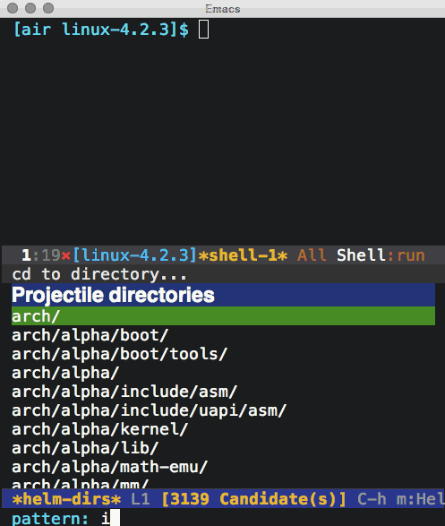
(require 'helm-projectile) (defun ar/shell-cd (dir-path) "Like shell-pop--cd-to-cwd-shell, but without recentering." (unless (string-equal mode-name "Shell") (error "Not in Shell mode")) (message mode-name) (goto-char (point-max)) (comint-kill-input) (insert (concat "cd " (shell-quote-argument dir-path))) (let ((comint-process-echoes t)) (comint-send-input))) (defun ar/helm-projectile-shell-cd () "Change shell current working directory using helm projectile." (interactive) (unless (string-equal mode-name "Shell") (error "Not in Shell mode")) (let ((helm-dir-source (copy-tree helm-source-projectile-directories-list))) (add-to-list 'helm-dir-source '(action . ar/shell-cd)) (add-to-list 'helm-dir-source '(keymap . nil)) (add-to-list 'helm-dir-source '(header-line . "cd to directory...")) (helm :sources helm-dir-source :buffer "*helm-dirs*" :candidate-number-limit 10000)))
# Thermostat reset on Bosch WKD28350GB
My Bosch washer/dryer (WKD28350GB) stopped drying recently. Resetting the dryer's thermostat red breaker did the trick.
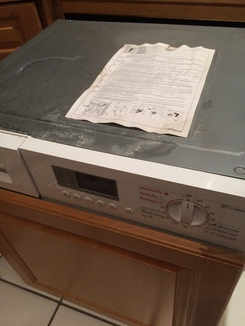 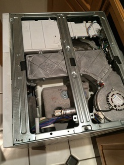
# Javascript fetch node sample
Playing with node and fetch:
// Requisite: npm install node-fetch --save // Save to fetch-demo.js // Run: node fetch-demo.js var fetch = require('node-fetch'); fetch("http://xenodium.com/data/javascript-fetch-node-sample/message.json", { method: 'GET', timeout: 5000 }).then(function(response) { return response.json(); }).then(function(response) { console.log('subject: ' + response.subject); console.log('body: ' + response.body); }).catch(function(reason) { console.log(reason); });
# Extract dominant colors in images
There's a handy HN post pointing to Javier López's Using imagemagick, awk and kmeans to find dominant colors in images. A comment also highlights color-extract, written in Go.
# Find a word with regex and WordNet
Recently wanted to come up with a random keyword. Querying WordNet and a regular expression did the job.
Installed WordNet on Mac:
$ brew install wordnet
Want a word ending in "esome"?
$ wn esome -grepn -grepv -grepa -grepr | egrep -o -e "\w*esome\b" | sort | uniq
adventuresome
awesome
blithesome
bunglesome
cuddlesome
esome
fivesome
gruesome
lithesome
lonesome
lovesome
meddlesome
mettlesome
nettlesome
threesome
tiresome
torturesome
troublesome
unwholesome
venturesome
wholesome
# Soundcloud's Go best practices (GopherCon 2014)
Having watched the video, some takeaways:
Single GOPATH
$GOPATH/src/github.com/soundcloud/foo
Repo structure
Formatting and style
Use gofmt.
Google's codereview guidelines.
Avoid named return parameters.
Avoid make and new (unless you know sizes).
Use struct{} for sentinel values: sets, signal chans.
Flags
func main() { var ( foo = flags.String("foo", "doch", "...") bar = flat.Int("bar", 34, "...") ) flag.Parse() // ... }
Logging
Testing
Code validation
# Sync pip with Mac OS updates
My pip installation recently broke after a Mac OS update.
$ pip
Traceback (most recent call last):
File "/usr/local/bin/pip", line 5, in <module>
from pkg_resources import load_entry_point
File "/System/Library/Frameworks/Python.framework/Versions/2.7/Extras/lib/python/pkg_resources.py", line 2793, in <module>
working_set.require(__requires__)
File "/System/Library/Frameworks/Python.framework/Versions/2.7/Extras/lib/python/pkg_resources.py", line 673, in require
needed = self.resolve(parse_requirements(requirements))
File "/System/Library/Frameworks/Python.framework/Versions/2.7/Extras/lib/python/pkg_resources.py", line 576, in resolve
raise DistributionNotFound(req)
pkg_resources.DistributionNotFound: pip==1.1
Updating my pip installation fixes the break:
$ sudo easy_install -U pip
# Chinatown treats review
Recommended? yep
There's a corner in Chinatown hosting some truly superb treats. If you get caught in the rush between Newport court and Newport place, you'd likely fail to notice some the awesome street food stands.
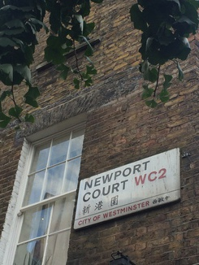
Chilly squid
I've walked past this place many times and never noticed it. They serve a handful of items, but the grilled chilly squid skewers caught my attention. They're grilled, brushed with chilly sauce and finished with sprinkled sesame and cumin seeds. Super tasty.
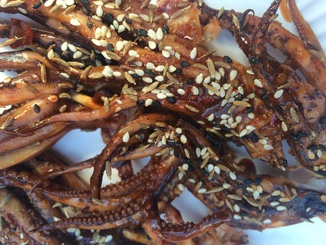
Pancake + Crisp + Egg + Hot chillies = Jiān Bǐng 煎餅
I first had these delicious breakfast savory pancakes at a Beijing street food stall. Never expected to randomly find Jiān Bǐng in London. It's a crepe with an additional egg spread, hoisin sauce, chilly sauce, hot chillies, topped with spring onions and coriander, all wrapping a wonderfully crispy bread cracker. And.. it's awesome.
Tai Yaki
Chinatown Bakery is hard to miss. Pedestrian traffic slows down as we all fall under the spell of the Tai Yaki machine. This wonderful assembly line produces fish-shaped sweet waffles filled with custard. They are the perfect dessert after some savory street snacks. You can get a bag of 4 for £2.
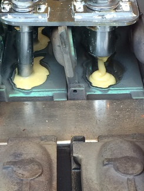
All near each other
All these delights are within a stone's throw away from each other.
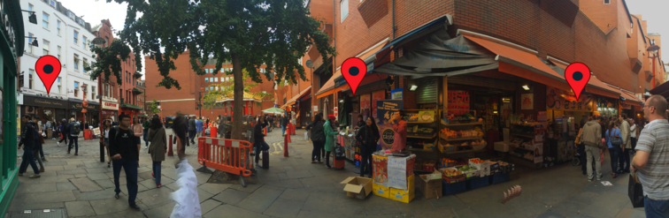
Useful?
Was this post useful to you? do reply!
Better suggestion?
London is full of overhyped, gimmicky, and unnecessarily expensive restaurants. Very few deliver truly awesome food (even those expensive ones). Got suggestions? I'd love to hear from you @xenodium.
# React bookmarks
- A Complete Guide to Flexbox.
- A Material Design style React Native component library.
- A pull to refresh ListView for React Native.
- Adam Wolf's React Native talk.
- Aligning Children using Flexbox in React Native.
- Avoid premature fluxing.
- Awesome React: a collection of awesome things regarding React ecosystem.
- babel-eslint.
- Bridging in React Native: An in-depth look into React Native's core.
- Building React Native Apps.
- Configuring Emacs to use eslint and babel with flycheck for javascript and React.js JSX.
- Dan Abramov - Live React: Hot Reloading with Time Travel at react-europe 2015.
- Deep Diving React Native Debugging.
- Developing React.js Components Using ES6.
- ECMAScript 5 Strict Mode, JSON, and More.
- eslint-plugin-flowtype.
- Exponentjs.
- Flowery: prettifies the result generated by Facebook Flow.
- Flux diagram.
- Getting Started with Redux (30 lessons).
- ListView rendering issue.
- OfflineMovies: retrieves movies from an api and caches the result offline.
- One day with React Native for Android.
- Optimizing React Native views (Screencast).
- React Component Starter Kit.
- React Native accordion.
- React Native action button.
- React Native Animated ScrollView Row Swipe Actions.
- React Native in the Github Community.
- React Native Layout System.
- React Native Material Design.
- React Native Newsletter - Issue #24.
- React Native Newsletter - Issue #25.
- React Native Playground.
- React Native scrollable decorator.
- React Native Toolkit (navigation examples).
- React Native Tutorial: Building Apps with JavaScript.
- React Tips and Best Practices.
- react-native-redux-router (replace push/pop screens with easy syntax).
- react.parts/native feed.
- Reactive Programming Overview.
- Redux: Predictable state container for JavaScript apps.
- Removing User Interface Complexity, or Why React is Awesome.
- Snowflake (React iOS/Android + Redux + Jest testable + parse.com + bitrise.io).
- Testing react Native with jest.
- The Case for Flux.
- The reactive manifesto.
- Tutorial: Handcrafting an iOS Application with React Native (and lots of love).
- What I learned from building with React.
- Why React Native is Better than Native for Your Mobile Application.
- Writing Modular JavaScript With AMD, CommonJS & ES Harmony.
{kind=link}
# Chinese rice vinegar
Note to self to buy Gold Plum Chinkiang Vinegar. Awesome with dim sum.
# Use ImageMagick to batch-resize images
Using percentage:
$ mogrify -resize 10% *.png
Using dimensions:
$ mogrify -resize 120x120 *.png
Lots of other alternatives from ImageMagick's documentation:
| -resize | scale% |
| -resize | scale-x%xscale-y% |
| -resize | width |
| -resize | xheight |
| -resize | widthxheight |
| -resize | widthxheight^ |
| -resize | widthxheight! |
| -resize | widthxheight> |
| -resize | widthxheight< |
| -resize | area@ |
# Lucky 7 review
Recommended? yep
Buttermilk Banana pancakes
These are my favorite pancakes in London by far. Banana buttermilk pancakes and a few free coffee refills usually sort me out until dinner time. Add a side of bacon if extra hungry. You probably don't need it though.
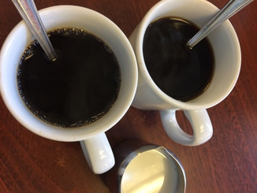
Reuben sandwich
The reuben has been on Lucky 7's specials menu for months now. Not had many of these in London, but compared to The Brass Rail's, this reuben was a clear winner. The sandwich is huge and comes with fries. My girlfriend and I struggled to finish one between the two of us.
Vanilla milkshake (add malt!)
This milkshake hits the spot every time, but it's filling. You almost have to decide between the shake and an actual meal. If you must have it, add malt. Sorry, no picture.
Huevos Rancheros
This is a breakfast dish I can equally make (better?) at home, but Lucky 7 wins hands down every time I'm feeling particularly lazy. Sorry, no picture.
Useful?
Was this post useful to you? do reply!
Better suggestion?
London is full of overhyped, gimmicky, and unnecessarily expensive restaurants. Very few deliver truly awesome food (even those expensive ones). Got suggestions? I'd love to hear from you @xenodium.
# Sierra Leone travel bookmarks
# London travel bookmarks
- Soho Theatre (not tried yet).
# Use ImageMagick to auto-orient images
Recently needed to rotate images based on EXIF metadata. ImageMagick to the rescue:
$ for i in *.png; do convert -auto-orient "$i" "$i"; done
# Bengali Macher Jhol
My friend Sakhya brought me the wonderful Cookbook of Regional Cuisines of India. After improvisations and substitutions, here's my attempt at making Bengali Machcher Jhol:
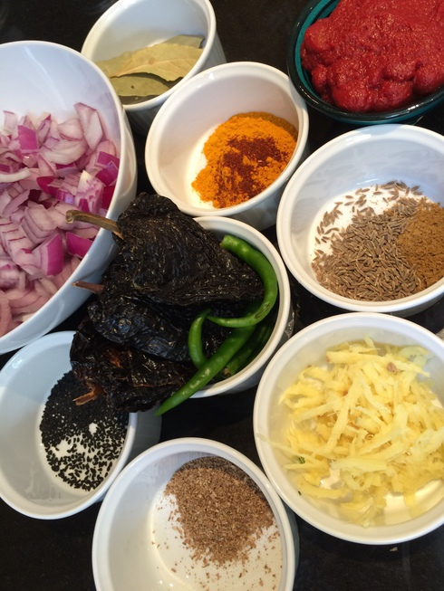

# New habits for 2015
- 20 min morning meditations.
- A better way to tie your shoes.
- Cold showers (all of them!).
- Keys, wallet, phone, badge, and headphones live together.
- Listen to audio books.
- Morning runs.
- Nightly flossing.
# Meditation retreats bookmarks
# Meditation bookmarks
# Learning bookmarks
- Best YouTube channels for learning (Quora).
- HN's comments on learning languages.
- HN's comments on memory.
- How to Finally Play the Guitar: 80/20 Guitar and Minimalist Music.
- Learning to learn.
- Learning to Learn: Intuition Isn’t Optional | BetterExplained.
- Scientific Speed Reading: How to Read 300% Faster in 20 Minutes.
# Bundi travel bookmarks
- Bundi Haveli (accomodation).
- Hadoti Palace (accomodation).
- Haveli Braj Bhushan Ji ki (accomodation).
- Haveli Katkoun Guest House (accomodation).
- Kasera Paradise (accomodation).
# Upgrading PL30 headphones
I've loved my Soundmagic PL30 in-ear headphones. They're relatively inexpensive, comfortable, and great for exercising (they stay in). Audio quality and bass have been good enough (I don't need much). Unfortunately, I've had two pairs of PL30's and both stopped working after a year or two. I'm replacing the last pair with RHA's MA750 (an upgrade, me hopes).
Other contenders considered: Etymotic Research HF5, and Shure SE215. Also considered bluetooth alternatives like JayBird BlueBuds X and Plantronics BackBeat GO 2.
I'm somewhat nervous to pay more for a pair of headphones. Let's hope they don't meet the same unfortunate fate. We'll see.
# Quotes
- "Being good at something is about being curious enough to explore things to a level where most people give up."
- "The world is a book and those who do not travel read only one page." - Augustine of Hippo.
- "National identity is not your only identity." - Xiaolu Guo?
# Bhutan travel bookmarks
# Cooking bookmarks
# 9 week half-marathon training
While reading Zen Habits: Mastering the Art of Change, I comitted to running half marathon in mid-October. That's roughly two months from now. Here's a 9 week training schedule:
| WEEK | MON | TUE | WED | THU | FRI | SAT | SUN |
|---|---|---|---|---|---|---|---|
| 1 | Rest | 5 Km | 5 Km | Cycle | Rest | 5 Km | 7 Km |
| 2 | Rest | 5 Km | 5 Km | Cycle | Rest | 5 Km | 8 Km |
| 3 | Rest | 7 Km | 5 Km | Cycle | Rest | 5 Km | 10 Km |
| 4 | Rest | 8 Km | 5 Km | Cycle | Rest | 5 Km | 12 Km |
| 5 | Rest | 8 Km | Rest | 8 Km | Rest | 5 Km | 14 Km |
| 6 | Rest | 8 Km | Rest | 8 Km | Rest | 6 Km | 16 Km |
| 7 | Rest | 8 Km | 8 Km | 8 Km | Rest | 8 Km | 19 Km |
| 8 | Rest | 8 Km | Rest | 12 Km | Rest | 8 Km | 16 Km |
| 9 | Rest | 8 Km | Rest | 5 Km | 5 Km | Rest | Race |
My times:
| WEEK | MON | TUE | WED | THU | FRI | SAT | SUN |
|---|---|---|---|---|---|---|---|
| 1 | Rest | ✘ | 29:04 | ✔ | Rest | 26:36 | 38:40 |
| 2 | Rest | 29:11 | 28:50 | ✔ | Rest | 27:07 | 44:55 |
| 3 | Rest | 40:46 | 26:29 | ✔ | Rest | ✘ | 57:01 |
| 4 | Rest | 46:46 | ✘ | ✘ | Rest | 30:08 | 1:12:10 |
| 5 | Rest | 46:59 | Rest | 44:46 | Rest | 24:50 | 1:25:24 |
| 6 | Rest | 50:02 | Rest | 46:24 | Rest | ✘ | 1:37:39 |
| 7 | Rest | 46:54 | 46:41 | 46:42 | Rest | ✘ | 1:57:57 |
| 8 | Rest | 45:28 | Rest | 48:13 (8km) | Rest | 43:56 | ✘ |
| 9 | Rest | 44:24 | Rest | 27:12 | 26:09 | Rest | 1:58:28 |
# Shanghai travel bookmarks
- 36 Hours in Shanghai.
- Shanghai Xiaolongbao at Dumpling House Edison (on Rt 27).
- Tianzi Fang street art (Google maps).
- Tianzi Fang street art.
- Town God's Temple, street Food!
- Yu Garden/Huxinting Teahouse.
- 佳家 for 小龙包.
- 小样 (Little Yang's) for 生煎包 (sheng jian bao). Fried soup filled dumplings. Think skin crunchy bottom texture.
# Singapore job board bookmarks
# Germany travel bookmarks
# Menorca travel bookmarks
# Travel essentials
# Philippines travel bookmarks
# Add site-specific browsers to your workflow
There are three browser tabs continously used in my workflow: GMail, Google Calendar, and Google Play Music. I normally have many more tabs open, but these three I access periodically. As the number of open tabs increases, and I fail to cleanup, getting back to my usual three gets a little trickier.
So far, I've kept each of these services open in separate windows. But that doesn't always work. Click on any link in your inbox and you're back to playing cleanup. This is where site-specific browsers (SSB) can help.
Epichrome enables you to build Chrome-based SSBs (on Mac OSX). Build an SSB for the usual suspects and easily jump to them using the app switcher.
# iOS camera bookmarks
# Sardinia travel bookmarks
- Alghero.
- Baja Sardinia.
- Budoni.
- Cala Goloritze, Sardinia.
- Castelsardo (gifts maybe?).
- Food: Maialetto sardo (Pig), Sebadas, Pardula, Papassinas, Pani e sapa.
- L'Asinara boat trip (abandoned penitentiary).
- La Pelosa beach.
- Nuraghe.
- Porto Cervo.
- Porto Torres.
- San Teodoro.
- Stintino (fishing port).
- Zedda e Piras vinyards (Alghero).
# Open closest build file in Emacs
Whether it's Makefile, SConstruct, BUILD, or your favorite build file, chances are you have to tweak it from time to time. ar/open-build-file searches your current and parent directories to find a build file.
(defvar ar/project-file-names '("Makefile" "SConstruct" "BUILD")) (defun ar/parent-directory (path) "Get parent directory for PATH." (unless (equal "/" path) (file-name-directory (directory-file-name path)))) (defun ar/find-upwards (path filename) "Search upwards from PATH for a file named FILENAME." (let ((file (concat path filename)) (parent (ar/parent-directory (expand-file-name path)))) (if (file-exists-p file) file (when parent (ar/find-upwards parent filename))))) (defun ar/open-closest (filename) "Open the closest FILENAME in current or parent dirs (handy for finding Makefiles)." (let ((closest-file-path (ar/find-upwards (buffer-file-name) filename))) (when closest-file-path (message closest-file-path) (switch-to-buffer (find-file-noselect closest-file-path))) closest-file-path)) (defun ar/open-build-file () "Open the closest project file in current or parent directory. For example: Makefile, SConstruct, BUILD, etc. Append `ar/project-file-names' to search for other file names." (interactive) (catch 'found (mapc (lambda (filename) (when (ar/open-closest filename) (throw 'found t))) ar/project-file-names) (error "No project file found")))
# Create iOS static fat libraries
Have separate static libraries for different iOS architectures? Stitch 'em up into a single fat library using with lipo:
$ lipo -create libOne_i386.a libOne_x86_64.a libOne_armv7.a libOne_arm64.a -output libOne.a
# Settling scores with an org table
Recently kept track of expenses between a group of us. To settle the scores, I emailed an exported HTML table from an org file. This was simple enough and required no external viewer from recepients. The org table, in all its textful glory, looked as follows…
| Date | Item | Charge | |------------------+----------------+----------| | [2015-06-18 Thu] | Cash | 20.00 | | [2015-07-11 Sat] | Lucky 7 | 42.97 | | [2015-07-13 Mon] | Santa Maria | 32.00 | | [2015-07-12 Sun] | Tayyabs | 46.00 | | [2015-07-13 Mon] | The Brass Rail | 39.00 | | [2015-07-13 Mon] | Underground | 10.00 | | [2015-07-10 Fri] | Cash | 20.00 | | [2015-07-13 Mon] | Cash | 20.00 | | [2015-07-14 Tue] | Cash | 20.00 | |------------------+----------------+----------| | | total | £ 249.97 | #+TBLFM: @11$3=vsum(@2..@10);£ %.2f
…while the exported HTML below could be easily pasted on to an email.
| Date | Item | Charge |
|---|---|---|
| Cash | 20.00 | |
| Lucky 7 | 42.97 | |
| Santa Maria | 32.00 | |
| Tayyabs | 46.00 | |
| The Brass Rail | 39.00 | |
| Underground | 10.00 | |
| Cash | 20.00 | |
| Cash | 20.00 | |
| Cash | 20.00 | |
| total | £ 249.97 |
# Recognize new password prompts in Emacs shell
At some point, you may come across a trusted command-line utility prompting you for a password, and Emacs shell happily displaying each typed character to the nearby-world to see. Luckily, you can train Emacs to recognize new password prompts and hide the typed characters in modes deriving from comint. Append the password prompt REGEXP:
(setq comint-password-prompt-regexp (concat comint-password-prompt-regexp "\\|" "Password for red alert:"))
# Bosnia and Hercegovina travel bookmarks
# Ireland travel bookmarks
# Pizza in London
Not tried these yet. Taking note:
- Bravi Ragazzi (Streatham).
- Homeslice (Covent Garden).
- Lord Morpeth (Hackney).
- Santa Maria (Ealing).
- Voodoo Ray's (Dalston).
- Well Kneaded Wagon (Date-dependent location).
# mp4 to gif
Converting mp4 to gif is handy for posting short screencasts. You can convert to gif using ffmpeg and optimize with imagemagick. To install:
apt-get install ffmpeg imagemagick (linux) brew install ffmpeg imagemagick (Mac)
Convert to gif:
ffmpeg -i my.mp4 -pix_fmt rgb24 -r 5 my.gif
Optimize with:
convert -dither none -layers Optimize my.gif my_optimized.gif
UPDATE: There's also licecap and subsequently optimize with:
cat source.gif | gifsicle --colors 256 --optimize=3 --delay=15 > target.gif
# Keyboards bookmarks
# United States travel bookmarks
# Lebanon travel bookmarks
# Slovenia travel bookmarks
# Belgium travel bookmarks
# Fishing with Emacs
OK not quite, but having recently learned about C-M-w (append-next-kill), I used it in a keyboard macro to fish out matching lines. This is similar to flush-lines, except the kill ring is also populated. This is handy, if you need the flushed lines. Here's an example.
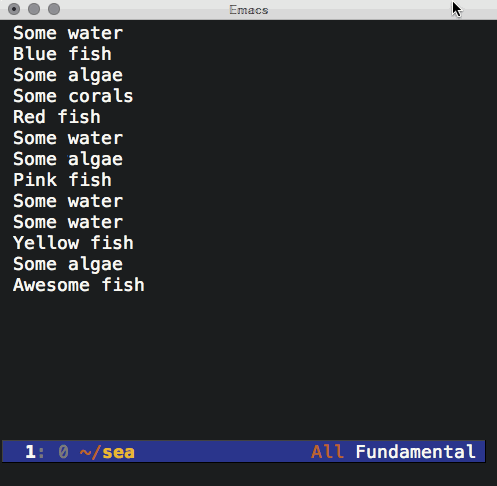
Here's the equivalent in Emacs lisp:
(defun flush-kill-lines (regex) "Flush lines matching REGEX and append to kill ring. Restrict to \ region if active." (interactive "sFlush kill regex: ") (save-excursion (save-restriction (when (use-region-p) (narrow-to-region (point) (mark)) (goto-char 0)) (while (search-forward-regexp regex nil t) (move-beginning-of-line nil) (kill-whole-line)))))
# California travel bookmarks
# Rebind caps lock to control key on Mac OS X
Let's see if this one sticks. I'll give caps lock as control a try. Rebinding the keys on Mac OS X is easy enough: 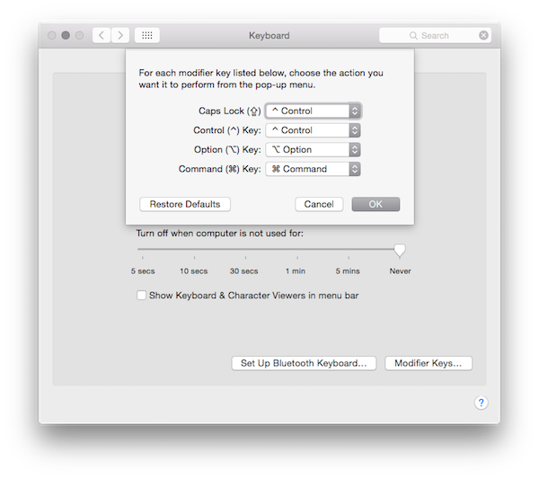
System Preferences -> Keyboard -> Keyboard Tab -> Modifier Keys…
# Searchable ebooks in Emacs
If you haven't bought Mastering Emacs by Mickey Petersen, you should. It's a wonderful source of Emacs tips. Having just finished the ebook on my Kindle, I was keen to go back and fish out some of that newly found wisdom. My immediate reaction was to figure out a way to make the ebook searchable from Emacs.
The ebook is available in epub and pdf format. Though Emacs's docview is super handy for viewing pdf's, searching didn't feel as comfortable as searching in org mode. The epub, on the other hand, proved useful. Pandoc can easily convert from epub to org.
pandoc --from=epub --to=org mastering-emacs.epub > mastering-emacs.org
After a some tidying (mostly removing BEGIN_HTML/END_HTML blocks and adding TITLE/AUTHOR), the resulting org file is surprisingly clean and easy to search/navigate. helm-swoop and helm-org-in-buffer-headings are great for that. 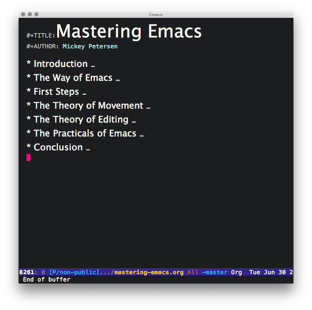 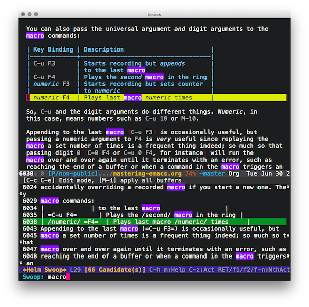 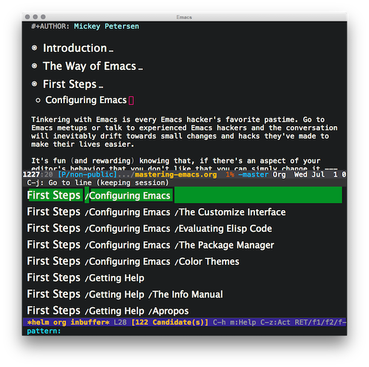
# Portugal travel bookmarks
- Avenida dos Platanos.
- Azores islands.
- Boca do inferno.
- Cabo da Roca.
- Casa dos passarinhos (Steak on hot stone, tuna steak with “mirandesa” sauce, monkfish masada).
- Cascais - Guincho.
- Cervejaria Ramiro (seafood restaurant in town).
- Eduard 7th park.
- Estoril.
- Fox Trot (bar).
- Jeronimos Monastery (Lisbon).
- Lisbon Castle.
- Mouro's castle (Sintra).
- Mouro's castle.
- Pasteis de Belem (Lisbon).
- Pastelaria piriquita eat queijadas de sintra.
- Pasteleria Piriquita (Sintra).
- Pavilhao Chines (bar).
- Pena's Pallace (must see if you go to sintra)
- Pena's Pallace (Sintra).
- Pensao do Amor (bar).
- Praça do comercio.
- Quinta da Regaleira
- Quinta da Regaleira (Sintra).
- Sintra village
- Sintra.
- Stop do bairro (tamboril rice, prawn curry, and seafood rice).
- Sé (Lisbon Cathedral).
- The best beaches in Portugal's Algarve.
- This other Eden: the Azores, Europe's secret islands of adventure.
- Torre Belem (Lisbon).
# Bulgaria travel bookmarks
# Presenting bookmarks
# Bali travel bookmarks
- Pura Lempuyang, Bali.
# WWDC app for OS X
Guilherme Rambo created a great OS X OS X app for viewing WWDC content. Just installed it. Super handy. Thanks. Installing as simple as:
$ brew cask install wwdc
# Debugging Objective-C reference cycles
Overriding retain/release/autorelease may be handy while debugging:
- (instancetype)retain { NSLog(@"%p, retain", self); return [super retain]; } - (oneway void)release { NSLog(@"%p, release", self); [super release]; } - (instancetype)autorelease { NSLog(@"%p, autorelease", self); return [super autorelease]; }
# London grub
Beyond the hype, buzz, and pricey gimmicks… Places to eat in London:
- Antipode.
- Arang.
- Bone Daddies.
- Gelupo.
- Grind.
- Holy Cow.
- Kerbisher and Malt.
- Kulu Kulu (South Ken).
- Le Relais de Venise.
- Lucky 7's.
- Royal China.
- Shree Krishna Vada Pav.
- Sri Suwoon.
- Tayyabs.
- The Cow.
- Tonkotsu.
# My working playlist
It's been a while since I spotted The Ultimate Music Collection for Getting Work Done. Since then, I've been on the lookout for music to work to. Some favorites:
- B. Fleischmann - I'm Not Ready For The Grave Yet.
- B. Fleischmann - Pop Loops For Breakfast.
- B. Fleischmann - Sidonie.
- B. Fleischmann - The Humbucking Coil.
- B. Fleischmann - The Tired Sounds of Stars of the Lid.
- B. Fleischmann - Welcome Tourist.
- Bexar Bexar - Haralambos.
- Budhaditya Mukherjee - Sitar Recital.
- Daft Punk - TRON: Legacy.
- General Fuzz - Soulful Filling.
- Inception (Music From The Motion Picture).
- ISAN - Lucky Cat.
- ISAN - Plans Drawn In Pencil.
- Jayanthi Kumaresh - Mysterious Duality.
- Mogwai - Les Revenants.
- Moondog - Big Cat.
- Moonrise Kingdom (Original Soundtrack).
- Nico Muhly - Drones.
- Paul Leonard-Morgan - Limitless (Original Motion Picture Soundtrack).
- Robert Scott Thompson - Upon the Edge of Night.
- Ryan Miller - The Kings of Summer (Jordan Vogt-Roberts' Original Motion Picture Soundtrack).
- Stars of the Lid - And Their Refinement of the Decline.
- Start of the Lid - Gravitational Pull vs. The Desire for an Aquatic Life.
- Terry Riley - A Rainbow In Curved Air; Poppy Nogood and the Phantom Band.
- Trent Reznor & Atticus Ross - The Social Network (Soundtrack from the Motion Picture).
- Trentemøller - Into The Great Wide Yonder.
- Tycho - Awake.
- Various Artists - Singing Strings From India.
- Whiplash (Original Motion Picture Soundtrack).
- Youth Lagoon - The Year Of Hibernation.
# Xcode bookmarks
# Costa Rica travel bookmarks
# Australia travel bookmarks
- Australia's best food experiences: state by state.
- Best Queensland island escapes for small budgets.
- The Butler Potts Point (bar & restaurant).
# Samoa travel bookmarks
# Norway travel bookmarks
# Los Angeles travel bookmarks
# Mastering Emacs is out
Emacs is amazingly alive. New packages are regularly listed on melpa and a new book just came out: Mastering Emacs by Mickey Petersen.

# South Carolina travel bookmarks
# Colorado travel bookmarks
# Bash bookmarks
# restclient.el
Installed Pashky's restclient.el Emacs package. Super helpful when trying out REST APIs.
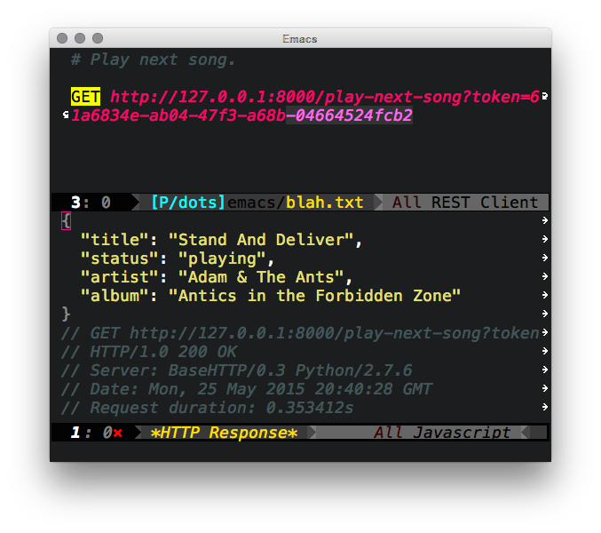
# Seatle travel bookmarks
# Berlin travel bookmarks
# Skeuomorph
From Wikipedia, skeuomorph ˈskjuːəmɔrf is a derivative object that retains ornamental design cues from structures that were necessary in the original. Examples include pottery embellished with imitation rivets reminiscent of similar pots made of metal and a software calendar that imitates the appearance of binding on a paper desk calendar.
# define-word
Installed Abo Abo's define-word Emacs package. A handy package to define words at point.
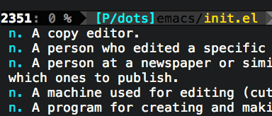
# Flushing empty lines in Emacs
Via masteringemacs.org, removing blank lines in a buffer:
M-x flush-lines RET ^$ RET
# Regex bookmarks
# Write to temp iOS snippet
NSString *tempDir = NSTemporaryDirectory(); NSLog(@"%@", tempDir); NSString *dataFilePath = [tempDir stringByAppendingPathComponent:@"my.file"]; [data writeToFile:dataFilePath atomically:YES];
# Greece travel bookmarks
# Sri Lanka travel bookmarks
# Switzerland travel bookmarks
# Thailand travel bookmarks
# Madagascar travel bookmarks
# Hong Kong travel bookmarks
# Barcelona travel bookmarks
# Iceland travel bookmarks
# Building clang-format
Based on instructions from Building clang-format and friends on OSX Mountain Lion.
#!/bin/bash set -o nounset set -o errexit # Based on instructions from: # http://blog.hardcodes.de/articles/63/building-clang-format-and-friends-on-osx-mountain-lion readonly LLVM_DIR_PATH='/tmp/llvm' update_repo() { if [[ ! -d $1 ]]; then git clone $2 else cd $1 git pull cd .. fi cd .. } update_all_repos() { update_repo "llvm" "http://llvm.org/git/llvm.git" pushd "${LLVM_DIR_PATH}/llvm/tools" update_repo "clang" "http://llvm.org/git/clang.git" popd cd "../../${LLVM_DIR_PATH}/llvm/tools/clang/tools" update_repo "clang-tools-extra" "http://llvm.org/git/clang-tools-extra.git" cd "../../.." } build_clang() { mkdir -p clang mkdir -p build cd clang ../llvm/configure --enable-libcpp --enable-cxx11 --enable-debug-symbols=no --enable-optimized --prefix="${LLVM_DIR_PATH}/build" make install } mkdir -p $LLVM_DIR_PATH cd ${LLVM_DIR_PATH} update_all_repos build_clang
Bonus: use clang-format-configurator.
# iOS Auto Layout bookmarks
# Programmatic iOS Auto Layout
Basic iOS auto layout usage. See Adopting Auto Layout and Visual Format language for reference.
- (instancetype)initWithFrame:(CGRect)frame { self = [super initWithFrame:frame]; if (self) { // Disable autoresizing mask translation for parent. self.translatesAutoresizingMaskIntoConstraints = NO; _subview1 = [[UIView alloc] init]; // Disable autoresizing mask translation for subview. _subview1.translatesAutoresizingMaskIntoConstraints = NO; _subview1.backgroundColor = [UIColor redColor]; [self addSubview:_subview1]; // Creates a dictionary of bindings to be used in visual format. NSDictionary *viewBindings = NSDictionaryOfVariableBindings(_subview1); // H: horizontal layout // |-50- spacing in relation to superview // [_subview1(==50)] subview1's width [self addConstraints:[NSLayoutConstraint constraintsWithVisualFormat:@"H:|-50-[_subview1(==50)]" options:0 metrics:nil views:viewBindings]]; [self addConstraints:[NSLayoutConstraint constraintsWithVisualFormat:@"V:[_subview1(==50)]" options:0 metrics:nil views:viewBindings]]; } return self; }
# Japan travel bookmarks
- 21 free things to do in Tokyo.
- 7 day Japan Rail pass (first class?), possibly only sold outside Japan.
- 80/20 Japanese.
- A Guide to the regional ramen of Japan.
- A Moss Girl’s Guide to Japanese Moss Viewing.
- A no-sushi guide to food in Japan.
- A trip to Japan (Quora answer).
- Autumn Leaves in Hokkaido.
- Drinking Japan.
- Five Best: Japanese Ryokan.
- Fuji Q Highland (rollercoaster theme park). Check out haunted hospital.
- Guest houses: Kazariya, Rakuza, Musubian.
- Hiiragiya ryokan.
- Himeji Castle.
- Hokkaido summer flowers.
- Hypermedia (internal travel website).
- jalan.net (travel booking site).
- Japan Info.
- Japan Rail Pass.
- Japan Study Program.
- Japanese beaches.
- Kawachi Fujien 河内藤園 (Kawachi Wisteria Garden).
- Koyasan (needs booking).
- Kyoto itineraries.
- Lots of goodies. Bamboo forest, oh my.
- Nagakushiyama park.
- Nagoya.
- Onsen.
- Quora: What are some of Japans best kept secrets?
- Table of Content for japan2013.
- Table of Content for japan2014.
- Table of Content for japan2015.
- The village of living water.
- TokyoCheapo.
- Top 10 Japanese Stationery Items for Foreign Tourists.
- Uncharted Tokyo.
- Zao Fox Village.
# Kyoto travel bookmarks
- Fushimi Inari Temple: 4KM mountain trail lined with bright orange shinto gates.
- Golden Pavillion (macha and biscuits at tea house).
- Hakone (day trip for hot baths), see Yuryo spa. Also the pirate boat.
- Kinkakuji Temple.
- Kiyomizu Temple.
- Kuramadera Temple & Kibune Shrine: More peaceful shrine.
- Kyoto travel tips (doc).
- Kyoto's train station itself.
- Nijo-Jo’.
- Nishiki Market: Awesome market. Some say better than Tsukiji.
- Ryokan ("kaiseki" meals).
- Sanjusangendo.
- Walking courses (Google maps).
- WaRaiDo Nighttime tour.
# Tokyo travel bookmarks
- Akihabara: Electronics district, arcades and comic stores.
- Asakusa hotel.
- Asakusa Shrine: Shinto shrine and market.
- Bar Epilogue.
- Bar Odin.
- Fish market (6am sushi).
- Ghibli museum (book in advance or try lawson).
- Ginza.
- Golden Gai (lots tiny bars).
- Hazelburn.
- Imperial Palace: Book to go inside. Beautiful park, great for pictures.
- Mori Art museum.
- Nezu museum.
- Omoide yokocho: Alleyway next to Shinjuku station. Lots of yakitori restaurants.
- Omotesando Koffee (coffee and baked custard slice).
- Omotesando side streets.
- Roppongi.
- Shibuya Crossing: Largest pedestrian crossing in the world.
- Shimokitazawa (thirft stores, music bands, pubs, and cafes).
- Takaosan (Mount Takao).
- Tokyo Municipal Government building: Only for observation deck with view to Fuji (if clear day).
- Tokyo station: Friendly JR office (english spoken). They help book all trips/tickets/reservations.
- Tokyo Station: Massive station. Lots of restaurants and shops (check out ramen street).
- Tokyu Hands and Loft (shops in Shibuya).
- Toritake (yakitori at Shibuya).
- Tsukiji Fish Market: Sushi bars and food vendors (get there early, visitor numbers restricted).
- Viron Bakery (in Shibuya).
- 婁熊東京 (raw and grilled pork).
- 酒友 (Sake & good Shabushabu), Roppongi.
# UK travel bookmarks
# Development quotes
# Spain travel bookmarks
# Meet up bookmarks
# Plantuml example
Played with Plantuml. Convenient for generating UML diagrams from text. Here's the Language Reference Guide. Here's an example:
@startuml
abstract class Singer {
abstract void sing()
void Dance()
}
skinparam monochrome true
Singer <|-- PopSinger
Singer <|-- SalsaSinger
class PopSinger {
void sing()
}
class SalsaSinger {
void sing()
}
@enduml
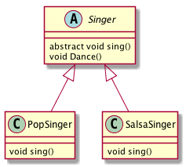
Install plantuml on Mac OS X:
brew install plantum
Generating diagram:
$GRAPHVIZ_DOT=~/homebrew/bin/dot java -jar path/to/plantuml.8018.jar diagram.plantuml
ps. Installation and verification gist.
# Helm-describe-helm-attribute
Writing A Spotify Client in 16 Minutes is fantastic for picking up helm and Emacs lisp tips. Of interest helm-describe-helm-attribute, second to the awesomeness of helm-spotify integration.
# Youtube videos in your org html export
Sacha Chua and John Wiegley posted a wonderful video on Emacs lisp development tips. Embedding the following raw HTML using #+BEGIN_HTML/#+END_HTML:
<iframe width="420" height="315" src="https://www.youtube.com/embed/QRBcm6jFJ3Q" frameborder="0" allowfullscreen> </iframe>
results in an embedded video when exporting your org file:
# .net bookmarks
# UK property bookmarks
- Commute from (find property based on potential commute).
- Mapumental Property (find property by travel time).
# Git commit message style
Adopted Tim Pope's Git commit message style. Also enabled Emacs's git-commit-training-wheels-mode:
(use-package git-commit-training-wheels-mode :ensure t :commands (git-commit-training-wheels-mode)) (use-package git-commit-mode :ensure t :config (add-hook 'git-commit-mode-hook 'git-commit-training-wheels-mode) :commands (git-commit-mode))
Another great post by Chris Beams.
# fci-mode and org-html-export-to-html bug
Having enabled fci-mode in most programing modes, org-html-export-to-html now exports an additional unicode character in source blocks. This thread has a workaround:
(defun org-html-fontify-code (code lang) ;; ... (funcall lang-mode) ;;;;;;;;;;;;;;;;;;;;;;;;;;;;;;;;;;;;;;;;;;;;;;;;;;;;;;;;;;;;;;;;;;;; (when (require 'fill-column-indicator nil 'noerror) (fci-mode -1)) ;;;;;;;;;;;;;;;;;;;;;;;;;;;;;;;;;;;;;;;;;;;;;;;;;;;;;;;;;;;;;;;;;;;; (insert code) ;; ...
# Try cocoapods out
$ pod try POD_NAME
# Cornwall travel bookmarks
# Austria travel bookmarks
# Cinnamon desktop run dialog
Note to self. Open with Alt-f2.
# Books for 2015
# Ayahuasca bookmarks
# Emacs init.el bookmarks
- Andrew Gwozdziewycz's init.el.
- Adam Schwartz's init.
- Andrew Kensler's init.el.
- Andrew's .emacs.
- Anler Hernandez's literate config.
- Chen Bin's init.el.
- Eric James Michael Ritz.
- Grant Rettke's literate config.
- Hardcore Freestyle Emacs.
- Huseyin Yilmaz.
- Mark Sparks's init.el.
- Marten Lienen's init.el.
- Mathew Lee Hinman's Emacs settings file.
- Rinat Abdullin's literary config.
- SO: How can I refactor C++ source code using emacs?.
# CSS vertical align using flex
Codepen snippet:
div{ height: 200px; background: #ccc; display: flex; justify-content: center; align-items: center; } p{ margin: auto }
# London diving schools
- London Diving School. Not heard good comments.
- Dive Wimbledon. Heard ok comments.
- Clidive is a BSAC club (amateur organisation). Not commercial but may take longer.
- Sublime Diving. Heard good comments.
- Oyster Diving. Pool in cetral London. Good comments.
- SS Thistlegorm mentioned as a memorable site.
- Many suggest to get certified elsewhere. Perhaps Egypt via Poseidon Divers.
# Helm buffer URLs
Venturing into Emacs lisp and Helm. Here's a go at listing all URLs in current buffer.
(require 'goto-addr) (defun ar/helm-buffer-url-candidates () "Generate helm candidates for all URLs in buffer." (save-excursion (goto-char (point-min)) (let ((helm-candidates '()) (url)) (while (re-search-forward goto-address-url-regexp nil t) (setq url (buffer-substring-no-properties (match-beginning 0) (match-end 0))) (add-to-list 'helm-candidates (cons url url))) helm-candidates))) (defun ar/helm-buffer-urls () "Narrow down and open a URL in buffer." (interactive) (helm :sources `(((name . "Buffer URLs") (candidates . ,(ar/helm-buffer-url-candidates)) (action . (lambda (url) (browse-url url)))))))
# Doh! undo last git commit
$ git reset --soft HEAD~1
# Resetting variables using defvar
Want to re-evaluate defvars and modify variables? eval-defun (bound to C-M-x) can help. From the manual:
If the current defun is actually a call to `defvar', then reset the variable using its initial value expression even if the variable already has some other value. (Normally `defvar' does not change the variable's value if it already has a value.) Treat `defcustom' similarly.
# Broken Xcode plugins?
Some Xcode plugins stopped loading after updating Xcode. Ensure the latest DVTPlugInCompatibilityUUIDs is added to the plugin's Info.plist. Get from:
$ defaults read \
/Applications/Xcode.app/Contents/Info DVTPlugInCompatibilityUUID
Additional suggestions as Stack Overflow.
# Born to Run references
References from reading Christopher McDougall's Born to Run:
- Chi running.
- Chia and pinole. Random recipes here.
- Heritage Seeds.
- Ken Mierke’s Evolution running.
- Pose method.
- Quotes, references, videos, etc. at ultimate paleo guide.
Recipe by Megan Mignot, based on book references:
Mama Tita’s Pancakes
- 1 ½ cups cooked brown rice
- 1 cup coconut milk
- 2 ripe bananas
- 1 tablespoon honey
- ½ cup white cornmeal
- 2 teaspoons baking powder
# Org tips from 2015-03-18 Emacs hangout
Lots of great tips in Emacs Hangout 2015-03-18. Favorites:
- Private org drawer to prevent export:
:PRIVATE: My super duper secret text I don't want to export. :END:
- C-c C-p/C-c C-n Jump over sections.
- (setq org-hide-leading-stars t).
- (org-bullets-mode).
- (org-refile).
- C-u (org-refile) jumps, no refile.
- (helm-org-in-buffer-headings).
# Food bookmarks
# Ethiopia travel bookmarks
# China travel bookmarks
- 7 first-timer fails to avoid on your trip to Beijing.
- Beijing on a budget.
- Chinese cities you've never heard of.
- Ctrip for hotels. Stick to high-rated only.
- Essential regional cuisine of China.
- Fenghuang ancient town.
- Hallelujah Mountains.
- Houhai Lake (Beijing). Miscellaneous bars.
- Jiuzhaigou nature reserve.
- Luotuofeng peak, Sichuan.
- Nan Luo Gu Xiang (Beijing). Street Food!
- Qianmen Street. Near Tiananmen Square. Artifact shopping and famous food.
- Rock pools.
- Shanghai Street Food #7 Jiān Bǐng 煎餅.
- Shenzhen (Hong Kong). The worlds manufacturing ecosystem.
- Suspended Temple of Mt. Hengshan.
- The essential guide to backpacking China's silk road.
- What are some must-try foods when visiting China? (Quora).
- Zhangjiajie National Forest Park.
# South Korea travel bookmarks
# Sharing on iOS
- UIActivityViewController.
- Use completionWithItemsHandler on iOS 8.
- Sample:
NSString *title = @"Sharing on iOS bookmarks."; NSURL *url = [NSURL URLWithString:@"http://xenodium.com/#sharing-on-ios"]; UIImage *image = [UIImage imageNamed:@"beautiful-image"]; UIActivityViewController *controller = [[UIActivityViewController alloc] initWithActivityItems:@[title, url, image] applicationActivities:nil]; // self being a UIViewController. [self presentViewController:controller animated:YES completion:nil];
- Sharing through Mail app on simulator isn't supported.
viewServiceDidTerminateWithError: Error Domain=_UIViewServiceInterfaceErrorDomain Code=3 "The operation couldn’t be completed. (_UIViewServiceInterfaceErrorDomain error 3.)" UserInfo=… {Message=Service Connection Interrupted}
- Sharing through Mail app on device is OK.
- WWDC 2014 Creating Extensions for iOS and OSX, Part 1.
- Share Extensions talk by Guy Fullerton.
- Usually view controllers in addition to plist.
- CFBundleDisplayName.
- NSExtendion.
- NSExtensionAttributes.
- NSExtensionActivationRule.
- NSExtensionAttributes.
- SLComposeServiceViewController.
- UIActivityViewController.
- Share Extensions talk by Guy Fullerton.
- WWDC 2014 Creating Extensions for iOS and OSX, Part 2.
- Want to a share URL to App Store? See Technical Q&A 1633.
# San Francisco travel bookmarks
# Istanbul travel bookmarks
# Rome travel bookmarks
# Italy travel bookmarks
- 22 Towns in Italy That Are Almost Too Perfect Looking.
- Abbazia di Monte Oliveto Maggiore.
- Amalfi coast's Furore beach.
- Boboli Gardens, Florence.
- Caffe Meletti.
- Cinque Terre.
- Emilia Romagna. (foood!).
- Italy's six best road trips.
- Live the good life: 12 local experiences on the Amalfi Coast.
- Manarola.
- Montalcino, and Brunello wine.
- Piazza dei Miracoli.
- Piedmont.
- Pienza, Tuscany.
- Rabbit beach.
- Re di Macchia, restaurant in Montalcino.
- San Galgano, Tuscany.
- San Gimignano, Tuscany.
- San Lorenzo leather market.
- Skiing in Italy: find your perfect resort.
- Volterra, Tuscany.
# Emacs lisp debug on entry
Wanted to track down which package was enabling ido-mode on my behalf. debug-on-entry to the rescue. Pass the method name in question and you're good to go.
(debug-on-entry 'ido-mode)
When done, use cancel.
(cancel-debug-on-entry 'ido-mode)
# Burma travel bookmarks
- Ngapali beach.
- Bagan and Inle lake are the "touristy" areas.
- For Bagan, get bicycles.
- Shwesandaw at sunset.
- Inle lake guided boat tour.
- zyklusdiewelt's Myanmar's photos.
# OS X Screencasts to animated GIF
- Alex Dergachev has a great howto for generating animated GIF out of OS X Screencasts.
- Of interest GIF Brewery.
# Writing Xcode plugins
- Xcode-Plugin-Template from Delisa Mason/kattrali.
- Ensure DVTPlugInCompatibilityUUIDs is in Info.plist.
- Get from:
defaults read \
/Applications/Xcode.app/Contents/Info DVTPlugInCompatibilityUUID
- Luis Solanos's Xcode-RuntimeHeaders.
- Boris Bügling's Xcode-RuntimeHeaders fork.
- Building the Xcode plugin snapshots.
- Xcode Explorer enables you to explore Xcode events/notifications.
- Creating an Xcode4 plugin.
- Common Xcode plugin techniques.
- XcodeExplorer to monitor Xcode internals.
- Debugging your Xcode plugin.
# Uninstalling Alcatraz from Xcode
$ rm -rf ~/Library/Application\ Support/Developer/Shared/Xcode/Plug-ins/Alcatraz.xcplugin $ rm -rf ~/Library/Application\ Support/Alcatraz
ps. Removing all plugins:
$ rm -rf ~/Library/Application\ Support/Developer/Shared/Xcode/Plug-ins/*
# Prefill Emacs swiper with current region
The new swiper Emacs package is proving to be a great alternative to helm-swoop. Here's how to prefill with current region:
(defun ar/prefilled-swiper () "Pre-fill swiper input with region." (interactive) (if (region-active-p) (let ((region-text (buffer-substring (region-beginning) (region-end)))) (swiper region-text)) (swiper))) (global-set-key (kbd "C-s") #'ar/prefilled-swiper)
# Change Mac OS app icon
- Open the new icon (.icns) in Preview.
- Select all (⌘-a).
- Copy (⌘-c).
- Ctrl-click on app icon.
- Select Get Info.
- Click on app icon (top-left).
- Paste (⌘-v).
- Done!
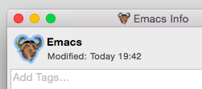
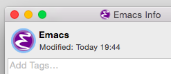
# Hack on Emacs London meetup bookmarks
- European Lisp Symposium.
- guide-key displays available key bindings.
- iplayer-el Emacs interface to the BBC's iPlayer.
- swankr REPL (swank protocol for R).
# Working with OS X and Emacs tips
From M-x all-things-emacs, Ryan McGeary's OS X/Emacs workflow.
Frequently used apps:
- 1 password.
- Choosy.
- Divvy.
- Fastscript.
- Fluid (SSB).
- Launchbar.
- Skitch (screenshots).
- te (Text expander).
Dotfiles
# Building ycmd
Build
$ git clone https://github.com/Valloric/ycmd.git $ cd ycmd $ git submodule update --init --recursive $ ./build.sh --clang-completer
Test
$ python ycmd serving on http://127.0.0.1:54265
More info
# Regular bookmarks
# Photography bookmarks
# Paris travel bookmarks
- Atelier Maitre Albert (known for its rotisserie chicken).
- Le Reminet (Paris restaurant).
- Au Passage. Small plates in fun atmosphere.
- Berthillon Ice Cream.
- Breizh Café (traditional gallete, savory buckwheat crepes).
- Buvette Gastrotheque. Wine bar with small dishes.
- Cheri Bibi, possibly hipster, underneath Sacre Coeur, good cocktails.
- Creperie Josseline. Worth the queue. Drink Breton cider with crepes.
- Holybelly Canal Saint Martin.
- How To Spend a Culinary Weekend In Paris.
- L'Aller Retour. The place for steak-frites.
- L'Office. Wine bar/bistrot.
- Le Barav'.
- Le Petit Poucet (restaurant next to Place de Clichy, Paris).
- Marché d'Aligre. Authentic neighbourhood market.
- Marché des Enfants Rouge. Small covered market. Eat at food stalls.
- Mosquee de Paris. City mosque. Drink mint tea at courtyard under olive trees or eat in restaurant inside. North African food.
- Musee d'Orsay.
- Paris: A Guide To Some Of The Best Cafes In Canal St. Martin.
- Pierre Herme. For great pastries and macarons.
- RATP for transport info including the "carnet" of 10 tickets.
- Rodin Museum.
- West Country Girl (crepes).
# Org mode bookmarks
- Assigning ids to entries.
- Automating boilerplate in org-mode journalling.
- Drawing Git Graphs with Graphviz and Org-Mode.
- Kevin's org notes.
- Literate DevOps.
- Org mode basics.
- Org mode examples and cookbook.
- Org mode examples.
- Org mode reference card.
- org-mode support for vCard export and import.
- Organize your life in plain text.
- Writing Specs with Org-mode.
# London food backlog
Covent Garden
Islington
- TODO Delhi Grill (Indian), try chicken makhani and naan.
- TODO Roots N1 (Indian).
- TODO The pig and butcher (sunday roast).
Soho
# UX bookmarks
- 10 kerning tips for improving your typography.
- 30 Flat Design Color Palettes That Just Work.
- Animated SVG icons.
- Apple's UI design Dos and Don'ts.
- California magazine.
- Creating badass users.
- Death to Stock (stock photos).
- Evil icons.
- Font squirrel (free fonts for commercial use).
- Images and Sketch files of popular devices.
- Images and Sketch files of popular devices (Hacker News).
- Logo Modernism (Book).
- Makerbook: A hand-picked directory of the best free resources for creatives.
- Material Design icons.
- Ten most popular webfonts of 2014.
- The 100 Best Design Blogs to Follow.
- The Foundations of a Good UI.
- The Psycology of UX.
- Typographica (type reviews, books, commentary).
# Unix/Linux tips backlog
- TODO entr runs commands when a file changes.
- TODO SoftEther VPN.
- TODO git-annex.
- TODO fasd a command-line productivity booster.
- TODO Linux environment management.
- TODO ASCII art text with figlet.
- TODO awk FAQ.
- TODO awk in 20 minutes.
- TODO Bruce Barnett's awk tutorial.
- TODO Bruce Barnett's sed tutorial.
- TODO Cool but obscure unix tools at kkovacs.eu.
- TODO Linux profiling at Netflix.
- TODO Using gnu stow to manage your dotfiles.
# Recipes
Tom Kha Gai soup
- Chicken or Prawns
- 2 kaffir lime leaves
- 1 lemongrass stalk
- 1 1/2 cocunut milk
- 3/4 sliced fresh galaghal
- 1 1/2 chicken stock or water
- 1/2 cup mushrooms
- 3 1/2 tbsp sugar
- 1/2 cup of cilantro
- 1-4 thai chillies
- 1-2 tbsp chili oil
- 1 green onion
Veg-Fruit juice
- Lime
- Ginger
- Apple
- Chilly
- Celery
- Fig
- Blueberries
Berry Hempster
- Hemp milk
- Hemp protein
- Strawberry
- Blueberry
- Date
How to cook Beef Chow Fun.
# Music backlog
- TODO Archive of Indian music.
- TODO Budhaditya Mukherjee.
- TODO Debashish Bhattcharya.
- TODO Halim Jafar Khan and his Disciples - Sitar Quintet - LP published in India in 1968.
- TODO Harjinderpal Singh.
- TODO Jayanthi Kumaresh.
- TODO Kayhan Kalhor.
- TODO Malaya Chalo.
- TODO Mehboob Nadeem.
- TODO Nirmalya Dey.
- TODO Zia Mohiuddin.
# UX scrapbook bookmarks
- 27 fonts* (give or take) that explain your world.
- 60 FPS on mobile web (plus layouts).
- Another minilimalistic one-pager.
- Another minimalistic gallery.
- Flag of Planet Earth.
- Kevin.is (Simple layout).
- Meng To's I Love Food I.
- Meng To's I Love Food II.
- Minimalistic blog layout.
- Minimalistic blog layout.
- Minimalistic gallery.
- Minimalistic one-pager.
- Neue Haas Unica (reborn).
- Neue Haas Unica.
- Organizational Debt is Like Technical debt — But Worse.
- Pierre-Yves Ritschard's minialistic blog.
- Raleway Font.
- Svbtle: A post on java developers. Enjoyed its minimalistic layout.
- whereis-whoishiring-hiring.me (minimalistic categorization).
{kind=link}
{kind=link}
# Travel blog bookmarks
# Travel bookmarks
- 21 Totally Breathtaking Trails.
- 5 increíbles escapadas a islas que quizás nunca has considerado.
- 52 Places to Go in 2016 (Hacker News).
- 52 Places to Go in 2016.
- A beginner's guide to the art of hiking.
- abitofculture.net.
- Alex in wanderland.
- Amazing places around the world.
- Backpacks and Bunkbeds.
- Beyond blighty.
- BLOUINARTINFO+TRAVEL.
- Continental Breakfast travel.
- Girl tweets world.
- How does it feel to travel alone? (Quora).
- How to pack light: tips from a master packer.
- How to pack light: tips from a master packer.
- How to travel: 21 Contrarian rules.
- International Railway Journal.
- izi.TRAVEL: A tour guide in your pocket.
- Joe's Trippin' A few tales from the road by a modern day nomad.
- Legal nomads.
- Need another holiday.
- Never ending footsteps.
- On The Luce.
- Restless Jo.
- See my travels.
- The Grown-up gap year.
- The Happy Talent. A Travel blog.
- The Travel Hack.
- The Travelbunny.
- The world's best places to see autumn colours.
- Thorn Tree travel forum (Lonely Planet's).
- Travel with Kat.
- Traveldudes.
- Traveling Spoon.
- Travelistly TV (high quality travel content).
- Tried and tested tips for a trouble free road trip.
- Two for the road.
- Ultimate travel list: Lonely Planet's top 10 sights in the world.
- Vagabond Baker.
- What are your top 10 travel tips? (Quora).
- World daily secret.
- World food and drink.
- X Days in Y.
- ytravel.
# Startup bookmarks
- 16 Startup Metrics (Hacker News).
- 16 Startup Metrics.
- 19 Amazing Sites To Get Free Stock Photos.
- A Dashboard for your Code.
- A guide to PR for startups (Hacker News).
- A guide to PR for startups.
- Airtable: cloud DB with a spreadsheet web UI.
- An iOS REST Client that is based on MVVM using ReactiveCocoa.
- An iOS Weather app case study.
- Answer these questions about potential digital platform.
- AppFigures: App tracking platform.
- AppScale, The Open Source Implementation of Google App Engine.
- Ask HN: Simple alternative to Google Analytics.
- Ask HN: What tools do you use to build HTML emails?
- Authentication Cheet Sheet.
- BaaS comparison.
- BaaS ecosystem map.
- Bayesian ranking of items with up and downvotes or 5 star ratings (Hacker News).
- Bayesian ranking of items with up and downvotes or 5 star ratings.
- Check for word safety (wordsafety.com).
- Clink78 hostel.
- Comparing five monitoring options for docker.
- Compose.io.
- Contentful: Like a CMS — except for the bad parts.
- Create OpenStreetMaps with uMap.
- curl online command line builder.
- Dashborads using ASCII and JS.
- Detect iOS Device location in just one line.
- Disposable chats in Go (more links here).
- Done is better than perfect.
- fieldbook: Create a database, as easily as a spreadsheet.
- Find your competition.
- Flag Theory: Freedom, Privacy and Wealth.
- Free tools for startups (Shyahi blog).
- Free vectors.
- Gain valuable, actionable feedback on your startup ideas.
- Glyphish icon collection.
- Go hosting (Reddit comments).
- gofundme.
- GraphQL, a query language and execution engine tied to any backend service.
- HN: Things to Know When Making a Web Application in 2015.
- How I got to the app store top with a simple currency app.
- How to Send Email Like a Startup.
- Icon archive.
- Icon finder.
- Layer, messaging platform.
- Lessons I learned from Co-Founding a startup.
- List of Minimal frameworks.
- Looker (Data analysis).
- Luis Abreu, iOS Design/UX Specialist.
- Mapbox. Maps for iOS, Android and Web.
- MAPS.ME (open sourced).
- Messaging UI for iOS.
- Names to reserve for your own service.
- Nighthawk (Debug iOS apps remotely from your browser).
- Office Snapshots.
- Onboarding engineers.
- OneSignal.
- Open Hunt: an open and community-run alternative to Product Hunt..
- Organizational Debt is Like Technical debt — But Worse.
- Origami for UI patterns and interactions.
- PaintCode (drawings into ObjC code) - coupon.
- Pair programming over code-reviews.
- parse.com.
- paymentfont.io (Payment icons).
- People Who Like This Also Like…
- People Who Like This Also Like… (Hacker News).
- Permutive (ad-server for sponsored content).
- Pragmatic app pricing (Hacker News).
- Pragmatic app pricing .
- Product Hunt: a curation of the best new products, every day.
- Psychological differences in price.
- Quora: What are the best productivity tools for entrepreneurs?
- RethinkDB FAQ.
- RethinkDB HN comments.
- Send email like a startup.
- Share as image.
- Startup advice, briefly.
- Structuring JSON data in your Firebase database.
- Submit.co: Press coverage for your startup.
- submit.co: Where to get press coverage for your startup.
- Swagger: Represent REST API.
- TextBelt: A free, open source API for outgoing texts..
- The noun project (more icons).
- The Psychology of Pricing: A Gigantic List of Strategies (HN comments).
- The Psychology of Pricing: A Gigantic List of Strategies.
- Things to Know When Making a Web Application in 2015.
- ToroDB.
- Using BitTorrent with Amazon S3.
- Valve employee handbook.
- We use RethinkDB at Workshape.io.
- What I'd tell myself about startups if I could go back 5 years.
- YC Sales agreement.
{kind=link}
# Romania travel bookmarks
# Productivity tips backlog
# Productivity bookmarks
- 10 fast fingers (improve typing skills).
- Day One Journal
- Dotfiles for insane productivity in bash, git, and vim.
- jrnl: Likely what I've been looking for journaling from command line.
- The Ultimate Guide to Personal Productivity Methods.
- Yan's dot files: For peaking.
- Yan's productivity tips: Also to try.
- Zotero.
# Privacy bookmarks
# Mindfulness bookmarks
# Lifestyle bookmarks
- "Do not spoil what you have by desiring what you have not; what you now have was once among the things you only hoped for." - Epicurus
- A simple guide to meditation.
- Anxiety Culture.
- Brain Pickings.
- Cameron Desautel on lifehacking.
- Cameron Desautel on productivity.
- Dr. Hamilton Demonstrates "The Hold" - How To Calm A Crying Baby (YouTube).
- Mind body green.
- NomadList: Best cities to work from remotely.
- Quiz: The 36 Questions That Lead to Love.
- Quora on increasing energy levels.
- The Shocking Truth About Freshly Squeezed Orange Juice.
- Travelling alone (Quora).
- Zero Waste Home.
# iOS imaging bookmarks
- Apple's PhotoScroller.
- Beginning Core Image in iOS 6.
- Color difference.
- Image Processing in iOS Part 1: Raw Bitmap Modification.
- Image Processing in iOS Part 2: Core Graphics, Core Image, and GPUImage.
- Image resizing techniques.
- Introduction to color spaces.
- JCTiledScrollView.
- Lab color space.
- SliceTool.
- Subduing CATiledLayer.
- Tile-Cutter.
- UIColor CMYK and Lab Values?.
- UIImage-Conversion.
- What's the best way to average two colors that define a linear gradient?.
# Graphics bookmarks
- gif.js.
- Icicles: Data viz.
- Protoviz: Data viz.
- Svg animation info: Potentially useful for some ideas in mind.
- Svg within svg: Potentially useful for some ideas in mind.
# Nexus Q bookmarks
# Go bookmarks
- 7 Common mistakes in Go.
- A curated list of awesome Go packages.
- A statistics package with common functions that are missing from the Golang standard library.
- A whirlwind tour of Go’s runtime environment variables.
- Avoiding Reflection (And Such) In Go.
- BasicGoAPI (ie. REST).
- Beego, platform for web apps.
- Building a RESTful API in Go Using Only the Standard Library (Episode 1).
- Building an API with Golang, RethinkDB and wercker.
- Command vet (reports suspicious constructs).
- Complex json handling in Go.
- Configr: abstraction on top of configuration sources.
- Configuring emacs and evil mode for Go development (Part 1).
- Custom transports and timeouts.
- Dancing with Go’s Mutexes.
- Debugging Go programs with Delve.
- defaultproject (REST/web starter).
- End-user authentication for Go web applications.
- Executing commands in Go.
- Exploring Go's runtime.
- fasthttp: Fast HTTP implementation for Go.
- Go by Example.
- Go Challenge 3 (Web application, OAuth, REST-based AIP, etc).
- Go Challenge 3 HN comments.
- Go Code Review Comments.
- Go command Line Flags.
- Go Concurrency Patterns: Pipelines and cancellation.
- Go library for downloading YouTube videos.
- Go Meta Linter.
- Go Proverbs Illustrated.
- Go Template Primer.
- go-bootstrap to generate a lean and mean Go web project.
- go-fuzz github.com/arolek/ase tutorial.
- Go-miniLock: The Minilock File Encryption System, Ported to Pure Go.
- go-rename.
- Go-restful.
- Goji: A web microframework for Golang.
- Golang toolbox (high quality Go packages).
- GopherCon 2015 videos.
- gorepl-mode.
- GRequests: A Go "clone" of the great and famous Requests library.
- How to Write Go Code.
- HUGO: a static website engine in Go.
- Interfaces and Composition for Effective Unit Testing in Golang.
- Kubernetes godeps.
- Let's talk about logging.
- Making and Using HTTP Middleware in Go.
- Monkey Patching in Go.
- Parsing HTML with Go using stream processing.
- Ran: a simple static web server written in Go.
- Reducing boilerplate with go generate.
- Restful webservice using golang with sqlite.
- Revel: A high-productivity web framework for the Go language.
- runtime.pprof for profiling.
- Sashay Go codegen.
- Sling: Go REST client library for creating and sending API requests.
- Small introduction to tags in Go.
- Swagger Go documentation generator.
- Ten useful techniques in Go (HN comments).
- Ten useful techniques in Go.
- termui, Go terminal dashboard.
- The 5 stages of learning Go.
- The Go Cookbook.
- The Hunt for a Logger Interface.
- Things I wish someone told me about Go.
- What's So Bad About Stdlib's Log Package? (Groups discussion).
- Writing Unit Tests for your net/http Handlers.
# GitHub
# Courses bookmarks
# Reload inputrc
Reload .iputrc from bash prompt: C-x C-r. More at bashref manual.
# Learning Emacs lisp
- Use nreverse and nconc to operate on lists in-place.
- Set buffer local variables:
(setq-local my-clever-var)
- Execute before saving buffer:
(add-hook 'write-file-hooks (lambda () (message "about to save!")))
- Possibly use to start processes and send file content:
(make-comint NAME PROGRAM &optional STARTFILE &rest SWITCHES)
- Creating markers:
(setq my-marker (copy-marker (point))) #<marker at 10251 in *ielm*> (marker-buffer my-marker) #<buffer *ielm*> (marker-position my-marker) 10251 (#o24013, #x280b, ?⠋)
- Get org heading at point:
(org-get-heading 'no-tags 'no-todo)
- Remove string text properties. From manual:
(substring-no-properties STRING &optional FROM TO)
Return a substring of STRING, without text properties. It starts at index FROM and ends before TO. TO may be nil or omitted; then the substring runs to the end of STRING. If FROM is nil or omitted, the substring starts at the beginning of STRING. If FROM or TO is negative, it counts from the end.
- Skip org entry metadata/drawers:
(org-end-of-meta-data-and-drawers)
- Random access to org entry using id (or CUSTOM_ID):
(org-open-link-from-string "[[#%exciting-custom-id]]")
- Go to where the function is defined.
- Press C-u C-M-x. Edebug breakpoint for function.
- Invoke function in question.
- n/c will get you around.
- q when done.
- Pretty printing objects:
(let ((my-var (list "val1" "val2" "val3"))) (pp-to-string my-var))
- Search and/or replace in curent buffer:
(re-search-forward "needle" nil t) (match-beginning 0) ;; Start location of match from last search. (match-end 0) ;; End location of match from last search. (replace-match "love") ;; needle-in-haystack
- Restrict buffer editing to a region:
(narrow-to-region (point) (point-max))
- Restore restriction:
(save-restriction (narrow-to-region (point) (point-max))
- Restore point, mark, and current buffer:
(save-excursion (goto-char (point-max)) (insert "Hello elisp."))
- Concatenating strings:
(concat "Hello " "elisp " "world.")
- Grabbing thing at point:
(thing-at-point 'word) (thing-at-point 'symbol) (thing-at-point 'line)
- Unit test with ert.
- Basic iteration with dolist:
(dolist (v '("a" "b" "c")) (print v))
- Output to other buffer:
(with-current-buffer (get-buffer-create "*some buffer*") (princ '(some list to print) (current-buffer)))
- For a temporary buffer, use with-temp-buffer:
(with-temp-buffer (insert "abc") (point))
- Cons cells bookmark.
- Check for substring:
(string-match-p REGEXP STRING &optional START)
- Matching substrings and accessing groups:
(setq haystack "Always click [[http://reddit.com/r/emacs][here]].") (setq needle-re "\\[\\[\\(.*\\)]\\[\\(.*\\)]]") "\\[\\[\\(.*\\)]\\[\\(.*\\)]]" (string-match needle-re haystack) 13 (#o15, #xd, ?\C-m) (match-string 0 haystack) "[[http://reddit.com/r/emacs][here]]" (match-string 1 haystack) "http://reddit.com/r/emacs" (match-string 2 haystack) "here"
- Return argument unchanged (noop):
(identity ARG)
- Org insert today's timestamp
(org-insert-time-stamp (current-time))
- OS version in .emacs: Determine OS in emacs lisp.
- First element
(car LIST)
- All but first element
(cdr LIST)
- Add NEWELT to front of PLACE
(push NEWELT PLACE)
- Invoke 'FUNCTION for each in SEQUENCE
(mapcar FUNCTION SEQUENCE)
- Search/replace
(while (search-forward "Hello") (replace-match "Bonjour"))
- Save to kill ring = copy.
- Point = cursor position.
- Mark = a buffer position.
- Kill = cut text.
- Yank = paste.
- Buffer:File = 1:1.
- Window:Buffer = 1:1.
- Frame:Window = 1:many.
- Font lock = syntax highlighting.
# Apple Watch bookmarks
# iOS bookmarks
- 11 Insanely Great iOS Developers Sites.
- Access mobile Safari via web inspector.
- An @import-ant Change in Xcode.
- Apple docs.
- Apple's coding guidelines for Cocoa.
- Apple's Concepts in Objective-C programming.
- Apple's mogile HIG guidelines.
- Behance.
- Clang 3.7 documentation BLOCK IMPLEMENTATION SPECIFICATION.
- Clean architecture for iOS.
- Cocoadocs.
- Cocoapods under the hood.
- Cocoapods.
- Code pilot.
- Code School iOS courses.
- ComponentKit is an Objective-C++ view framework for iOS that is heavily inspired by React.
- DaveLots of iOS resources.
- DJKFlipper.
- Giorgio Calderolla.
- How do I declare a block in Objcetive-C?
- How to launch your app from the iOS 8 Share Menu – updated for iOS 8.4.
- Injection for Xcode.
- iOS Apprentice.
- iOS Dev Tools.
- iOS dev weekly.
- iOS Programming 101: How To Send Email in Your iPhone App.
- iOS Programming.
- iOS Programming: The Big Nerd Ranch Guide (4th Edition).
- iOS projects catalogues.
- iOS ScrollView Example with Paging.
- ios-deploy: Install and debug iOS apps without using Xcode.
- ios-goodies.com.
- iosdevtips.co.
- joppar.com.
- Meerli.
- Mike Ash.
- More aggregation of awesomeness on github.
- NSHipster's Xcode plugins post.
- nsscreencast.com.
- Objc-C Zen book.
- Objc.io.
- Objective-C linter.
- OSStatus: Lookup Apple API errors fast.
- Programatically send an email using CFNetwork and GMail.
- Programming iOS Book examples.
- Ray Wendelich.
- Replace Xcode with Neovim.
- Reveal.
- ShareSDK is the most comprehensive Social SDK.
- Sharing data between iOS apps and app extensions.
- Shimmer: Shimmer is an easy way to add a shimmering effect to any view in your app.
- Subjective-C.
- TETHR.
- The Complete Tutorial on iOS/iPhone Custom URL Schemes.
- Twitter GIF composer.
- UI Testing in Xcode 7.
- Using Application Loader.
- VCTransitionsLibrary.
- Weekly bite-sized screencasts on iOS dev.
- Working with blocks.
- WWDC 2012 Xcode tips.
- WWDC 2014.
- WWDC 2015, 2014, 2013 and Tech-talks 2013 (videos and pdf downloader).
- YawImageViewer.
- Yet another iOS Blog.
# Kerala travel bookmarks
- Bagel Shop, 30 Pali Mala Road, off Carter Road, Bandra (W) (+91 22 2605-0178). Daily 9.00AM-10.00PM. Meal for two R500-R800.
- Hotel Natraj, 22-24 City Station Road, Udaipur (near Bapu Bazaar), +91-294-2487488, +91-94147-57893,
- Kala Ghoda Café,10 Ropewalk Lane, Kala Ghoda (+91 22 2263-3866). Daily 8.30AM-11.30PM. Meal for two R600.
- Kochin (Fort Kochin) - old port town with Chinese, Portuguese, Dutch, British and Jewish heritage.
- Munnar - hill station and centre of tea, coffee and spice growing. Great hiking and spectacular views.
- Periyar Wildlife Sanctuary.
- Suzette, Atlanta Building, Nariman Point (+91 22 2288-0055). Daily 9.00AM-11.00PM. Also at Bandra. Meal for two R600-R1,000.
- Varkala - chilled out beach resort.
- Yoga House, 53 Chimbai Road, behind St Andrew's Church, off Hill Road, Bandra (W)(+91 22 6554- 5001). Daily 7.00AM-10.30PM.
# India travel bookmarks
- A route: blore - pune - mumbai - ahmedabad - mt abu - udaipur - jaipur - amritsar - chandigarh - jammu - srinagar - kargil - leh.
- Akshardham (Delhi).
- Archeological survey of india sites.
- Bhaja caves, pune, maharashtra.
- Bhang.
- Bodh gaya.
- Budbudyanchi tali (bubbling pond) at netravali, sanguem, goa.
- Chand baori (Wikipedia).
- Chand baori.
- Chandipur Beach.
- Chittorgarh.
- Daulatabad fort.
- Descent of the Ganges (Mahabalipuram).
- Emergencies: +1-650-253-5555.
- Gaya, Bihar.
- Gwalior.
- Hampi.
- India on zeef.
- IRCTC Tourism (A government of India enterprise).
- Jodhpur.
- Kalyani/Pushkarini at Hulikere near Halebeedu,KA built by Hoysalas.
- Khajuraho.
- Khandala.
- Kovalam beach.
- Lonavala.
- Mahabaleshwar.
- Mahabalipuram.
- Manali, Himachal Pradesh.
- Mumbai - Bademita: chicken tikka.
- Mumbai - Bagdadi restaurant.
- Mumbai - Banaganga lake (Banganga cross lane).
- Mumbai - Bhel puri (find in stalls).
- Mumbai - Cafe Britannia (Kumtha St or Adi Murzaban Path with Shahid Bhaghat Singh Rd).
- Mumbai - Crawford market: revivat Indian thali.
- Mumbai - Eat Mumbai – make the most of India's foodie capital.
- Mumbai - Elephanta caves.
- Mumbai - Pali Market.
- Mumbai - The times of India: masala dosa.
- Mumbai - University of Mumbai.
- Mumbai - Vada pav (find in stalls).
- Mumbai - Victoria station: chai.
- Mumbai- 10 of the best food in Mumbai.
- Nagpur.
- Orchha.
- Panchgani.
- Pandavleni caves, nashik, maharashtra.
- Radhanagar beach.
- Rishikesh.
- Sabarmati Ashram.
- Varanasi.
- Vipassana pagoda.
- Western Ghats.
# Git bookmarks
- a hackers guide to git
- delete last commit
- git course: another git online tutorial, by git-tower folks.
- git from the trenches.
- git recipes for common mistakes and mishaps.
- kernel's git faq.
- model git commit message
- ndp software's git cheatsheet
- rerere: reuse recorded resolution.
- things you didn't know about git.
- Upcase's mastering Git course.
# Language learning bookmarks
# Graphics design tools bookmarks
# Emacs key bindings and maps
based on masteringemacs.org.
bonus tip
prefix key, followed by c-h, lists keys in prefix.
keymap
maps key to action.
keymap found in buffer and most major modes.
keys
- undefined: self explanatory.
- prefix key: ie. c-x (part of complete key).
- complete key: complete input executes associated command.
mapping
- (define-key keymap key def): add to current buffer map.
- (local-set-key key command): add to active buffer (no map option).
- (local-unset-key key)
- (global-set-key key command): add to global keymap (all buffers).
- (global-unset-key key)
key codes
- kbd: macro transaltes human-readable key to emacs readable.
- function and navigation keys must be surrounded by <>.
- example: (kbd "c-c p") or (kbd "<f8>") of (kbd "<down>").
remapping
- use remap to replace mapping (ie. kill-line with my/kill-line).
- (define-key keymap [remap original-function] 'my-own-function).
reserved keys
- "c-c ?" generally reserved for you, but third party packages use it.
- function keys (ie. f1-f12).
- hyper and super (ancient).
lookup order
- in a nutshell: minor mode keys, local keys, global keys.
- full order:
- overriding-terminal-local-map: terminal-specific key binds.
- overriding-local-map: override all other local keymaps (avoid if possible).
- char property at point: useful for yasnippet.
- emulation-mode-map-alists: advanced multi-mode keymap.
- minor-mode-overriding-map-alist: minor modes in major modes.
- minor-mode-map-alist: as previous (preferred for minor modes) <–—
- current-local-map: buffers current local map.
- current-global-map: last place to look (ie. global).
mode hooks
- (local-set-key (kbd "c-c q") 'my-awesome-method)) in hook-method.
- for key-chord-define, use current-local-map.
# Video backlog
- TODO How To Travel… The Slow Hustle Way.
- TODO 2015-12-10 Emacs Chat - John Wiegley.
- TODO How To Order Salads From Inside Emacs.
- TODO An introduction to Emacs Lisp.
- TODO 12 Challenging Steps to Being a Better Interviewer – Cate Huston at The Lead Developer 2015.
- TODO Born Rich: Children Of The Insanely Wealthy.
- TODO Emacs for writers.
- TODO Frugal fire 002: justin mccurry (rootofgood).
- TODO Graham Hancock – The War on Consciousness.
- TODO Griefwalker.
- TODO How to win the loser's game.
- TODO John Green's "Crash Course History" videos.
- TODO Matthieu Ricard Leads a Meditation on Altruistic Love and Compassion.
- TODO Matthieu Ricard: "Altruism" | Talks at Google.
- TODO Nick Hanauer – Rich People Don’t Create Jobs.
- TODO Programming is terrible — Lessons learned from a life wasted.
- TODO Rupert Sheldrake – The Science of Delusion.
- TODO Surya Namaskar stretches.
- TODO The Emacs of distros.
- TODO The Known Universe by AMNH.
- DONE The Internets own boy.
- DONE BBC's secret of levitation.
- DONE Hold Fast.
- DONE This is water, commencement speech.
- DONE This is water.
# Travel gear
# Origami bookmarks
# Movie backlog
- TODO Pressure Cooker.
- TODO Bob and David.
- TODO Twinsters.
- TODO Akira kurosawa director.
- TODO All About Eve.
- TODO Babadook.
- TODO Death to Smoochy.
- TODO Enter the void, by gaspar noe.
- TODO Four horsemen.
- TODO Hirokazu koreeda director.
- TODO Naomi kawaze director.
- TODO Nostalghia.
- TODO Sion sono director.
- TODO Solyaris
- TODO Stalker
- TODO Takashi kitano director.
- TODO Takashi miike director.
- TODO The connection.
- TODO The mirror
- TODO The Silent Partner.
- TODO Uncle boonmee who can recall his past lives, by apichatpong weerasethakul.
- TODO Waking life, by rickard linklater.
- DONE Awake, the life of yogananda.
- DONE Birdman.
- DONE Boyhood.
- DONE She A Chinese.
- DONE Wet Hot American Summer.
# Microservices bookmarks
# Books backlog
- TODO On Heroes, Hero-Worship, and the Heroic in History by Thomas Carlyle.
- TODO Edwin Sir Arnold's The Light of Asia.
- TODO Edwin Sir Arnold's The Song Celestial or Bhagavad-Gita.
- TODO 50 great curries of india.
- TODO 8 Week to optimum health.
- TODO A Guide to the Good Life: The Ancient Art of Stoic Joy.
- TODO Building Microservices.
- TODO First Opium War essay.
- TODO Flow: The Psychology of Optimal Experience.
- TODO Full catastrophe living.
- TODO goodreads.com.
- TODO Leaving Microsoft to Change the world.
- TODO Letters from a stoic.
- TODO Michael's bookshelf.
- TODO Neil degrasse tyson's reading list.
- TODO On the Road, by Jack Kerouac.
- TODO Public domain audio books.
- TODO Royal horticultural society's organic Gardening.
- TODO Salman Rushdie books.
- TODO Technopoly: The Surrender of Culture to Technology.
- TODO The Songlines, Bruce Chatwin.
- TODO The Walker's Guide to Outdoor Clues and Signs.
- TODO Thing Explainer: Complicated Stuff in Simple Words.
- TODO Ultimate curry bible.
- TODO Vagabonding: An Uncommon Guide to the Art of Long-Term World Travel.
- TODO Veg patch.
- TODO What Every JavaScript Developer Should Know About ECMAScript 2015.
- TODO Cameron Desautels's 2016 reading list.
# Gardening bookmarks
# Emacs tips backlog
- TODO ediff-revision and magit-find-file to compare branches.
- TODO Flycheck linter for sh using checkbashisms.
- TODO El Kanban Org: parse org-mode todo-states to use org-tables as Kanban tables.
- TODO Emacs iOS development (qiita).
- TODO Emacs iOS development (fujimisakari).
- TODO import-js.
- TODO encrypting org files.
- TODO flycheck-pos-tip.
- TODO ES6 yasnippets.
- TODO Writing Python Docstrings with Emacs.
- TODO Try Completion for Objective-C (Github diff).
- TODO swank-js.
- TODO Emacs fasd support.
- TODO visual-regexp.
- TODO Open large files.
- TODO company-sourcekit (Swift completion): sample config.
- TODO emacs-java-imports.
- TODO TypeScript Interactive Development Environment for Emacs.
- TODO append-to-buffer.
- TODO python-x: extras for interactive evaluation.
- TODO outlined-elisp-mode.
- TODO outlien-magic.
- TODO Gutter and linum+ config (see zvlex/dotfiles).
- TODO kurecolor: Editing color.
- TODO artbollocks-mode and writegood. More at Sacha's post.
- TODO auto-insert-mode.
- TODO Buffer local cursor color: ccc.
- TODO clang indexing tool: clang-tags.
- TODO Create custom theme: Trường's post.
- TODO dired-hacks.
- TODO emacs-index-search (lookup subject in Emacs manual).
- TODO gtd emacs workflow: Charles cave's notes.
- TODO info-apropos (lookup subject in all manuals).
- TODO Jumping around tips: zerokspot.
- TODO Mac OS clipboard support (from terminal): pbcopy.
- TODO Malabar mode: For Java.
- TODO Melpa recipe format:format.
- TODO Naturaldocs for javascript: Vineet's post.
- TODO Org protocol: see irreal's post and oremacs's part 1 and part 2.
- TODO org-multiple-keymap. More at org-multiple-keymap.el.
- TODO org-reveal: Export org to reveal.js.
- TODO Practice touch/speed typing: speedtype.
- TODO private configuration: private.
- TODO project management for C/C++: malinka.
- TODO Project templates: skeletor.
- TODO Rewrite git logs. See emacs magit tutorial | rewrite older commit.
- TODO Selective display: Hide lines longer than.
- TODO shell-command-on-region: Print inline with C-u M-|.
- TODO shell-command: Print output inline with C-u M-!.
- TODO Simplify media file transformations: make-it-so.
- TODO yatemplate.
- TODO org-page: Static blog.
- TODO emacs-helm-xcdoc.
- DONE How to get emacs key bindings in Ubuntu.
- DONE org-autolist.
- DONE Move up by parens: More at the manual.
- DONE sunrise-sunset.
- DONE ace-window.
- DONE Checkdoc.
- DONE Choose magit repo c-u c-x g (magit-status).
- DONE continue comment blocks: m-j (indent-new-comment-line).
- DONE Debug expanded elisp macros: See Wisdom and Wonder's post.
- DONE delete-duplicate-lines
- DONE Describe bindings: C-h b lists all bindings.
- DONE Disable furniture
(menu-bar-mode -1) (toggle-scroll-bar -1) (tool-bar-mode -1)
- DONE elmacro shows keyboard as emacs lisp.
- DONE yasnippet mirrors with transformations more at snippet development.
For example:
- (${1:id})${2:foo} { return $2; } - (void)set${2:$(capitalize yas-text)}:($1)avalue { [$2 autorelease]; $2 = [avalue retain]; } $0
- DONE Emacs regex: Emacs: text pattern matching (regex) tutorial.
- DONE export ascii art: artist mode + ditaa for uml. demo video.
- DONE lispy.
- DONE minimal: minimalist appearance.
- DONE Narrowing regions
- c-x n n (narrow-to-region).
- c-x n w (Widen).
- DONE nxml-mode.
- DONE org-beautify-theme: a sub-theme to make org-mode more beautiful.
- DONE Recursive query/replace
- M-x find-dired RET.
- Navigate to location, RET.
- Add find argument (omit for all files), RET.
- t (select all).
- Q (query-replace).
- Enter search/replace terms.
- y/n for each match.
- C-x s ! (save all).
- DONE Repeat last command: C-x z (and just z threreafter).
- DONE Replace char with a newline
- M-x replace-string RET ; RET C-q C-j.
- C-q (quoted-insert).
- C-j (newline).
- DONE smart-mode-line, sacha's sample usage.
- DONE Toggling key bingings: ode to the toggle.
- DONE unify-opening
- DONE use-package: lunaryorn.
- DONE sunshine.el.
- DONE youtube-dl: or emacs.
# Installing Emacs 24.4 on Linux
sudo apt-get install texinfo build-essential xorg-dev libgtk-3-dev libjpeg-dev libncurses5-dev libgif-dev libtiff-dev libm17n-dev libpng12-dev librsvg2-dev libotf-dev
# Installing Emacs 24.4 on Mac OS X
See Yamamoto's Mac OS X port. To install:
$ brew tap railwaycat/emacsmacport $ brew install emacs-mac
# Xcode6 tips
From Ray Wenderlich's tech talk And supercharging Your Xcode Efficiency (by Jack Wu).
Shortcuts
- ⌘⇧o Fuzzy file search.
- ⌘⌥j Fuzzy file search (showing in Xcode project hierarchy).
- ⌘⇧j Show file in Xcode project hierarchy.
- ⌘⌥0 Show/hide utility area (right panel).
- ⌘0 Show/hide navigation area (left panel).
- ⇧⌘Y Show/hide debug area (bottom panel).
- Ctrli Indent selection.
- ⌘\ Toggle breakpoint on line.
- ⌘/ Toggle comment.
- ⌘[1-8] Select tabs on left panel.
- Ctrl[1-x] Select top file navigation menu items.
Xcode features
- Snippets.
- Templates.
- View debugging.
- Simctl (send files to simulator).
Plugins of interest
- Fuzzy autocomplete.
- Uncrustify for indentation.
- xcs code switch expansion.
- Org and order (for properties).
# Simple ssh tunnel
Via @climagic, connections to tcp localhost:9909 will be made to 192.168.1.1:80 via SSH tunnel to home.
ssh -L 9909:192.168.1.1:80 home
# Emacs lisp bookmarks
- A quick guide to Emacs Lisp programming.
- Adding A New Language to Emacs (ie. writing a new major mode).
- An introduction to emacs lisp.
- eldoc-mode.
- Emacs - Elisp Programming and Customization.
- Emacs Lisp Guide.
- Emacs symbol notation.
- find-library.
- How to choose Emacs Lisp package namespace prefix.
- How to Make an Emacs Minor Mode.
- How to read emacs lisp.
- It's not hard to edit Lisp code.
- Learn emacs lisp in 15 minutes.
- Links and exported HTML.
- Living with Emacs Lisp.
- LOOP for Black Belts.
- Nongnu elisp guidelines.
- Read Lisp, Tweak Emacs.
- Refactoring “Beginning Emacs Lisp”: I: Adding Tests.
- Slime-style navigation for Emacs Lisp.
- Tips on Emacs Lisp programming.
- Wikemacs's Emacs Lisp Cookbook.
- Writing a Spotify Client.
- Xah Lee's Emacs Lisp Symbol (tutorial).
- Xah's Common Emacs Lisp Functions.
- Xah's Emacs Lisp idioms for Text Processing in Batch Style.
- Xah's Emacs Lisp Tutorial.
# Emacs bookmarks
- Aaron Bieber's blog.
- Ajoke.
- An introduction to Magit, an Emacs mode for Git.
- Andrey's Opionated Emacs Guide.
- Awesome Emacs.
- Best practices/tip for Companymode and/or YASnippet.
- Blogging from org-mode + rss.
- C/C++ Completion in Emacs.
- Configuring emacs to use eslint and babel with flycheck for javascript and React.js JSX.
- Content AND Presentation.
- Cross Platform System-wide Org-Capture.
- Curated list of packages by Ernst de Hart.
- Customizing emacs mode line.
- Effective editing I:Movement
- Effective emacs tips: From ergoemacs.
- Effective emacs: Steve Yegge's effective emacs tips.
- Emacs - the Best Python Editor?.
- Emacs as my UE4 IDE with intellisense.
- Emacs configuration: Simplify package management with cask.
- Emacs Fodder.
- Emacs for Cocoa development.
- Emacs for developers.
- Emacs for Xcode+ios Development.
- Emacs goodies: Emacs post with tips for navigating code.
- Emacs horrors.
- Emacs in one year: Someone's emacs experience over a year.
- Emacs is sexy.
- Emacs live.
- Emacs Nifty tricks: Another source of emacs goodness.
- Emacs NYC videos.
- Emacs redux.
- Emacs rocks.
- Emacs striptease (removing furniture).
- Emacs | less.
- Emacslife.
- Emagicians starter kit.
- Endless parenthesis.
- Enterprise Java Development in Emacs.
- Evan Misshula (lots of great tutorials).
- Fiplr: An Emacs Fuzzy Find in Project Package.
- Flx for emacs: Sublime-style searching for emacs.
- Fukuyama's Emacs/iOS.
- Git diffs using Emacs ediff.
- Go Delve - Debug Go programs interactively with the GUD.
- Hardcore Freestyle Emacs.
- Helm Projectile: Is awesome for finding files in emacs.
- How to Create a Screencast GIF in Emacs.
- hrisbarrett/swift-mode.
- iamleeg/swift-mode.
- investigating Emacs CPU usage.
- javadoc-lookup.
- Javascript development environment.
- Lunarsite.
- Making Emacs work for me.
- Making Ispell work with org-mode.
- Mastering Emacs.
- More emacs C++ goodness: More emacs dev environment tips.
- My Emacs Configuration with use-package.
- My Java, Android and Eclim Setup.
- Nerdgasms's Emacs tips.
- Nocturnal Artifice.
- o-blog.
- Objective-C snippets #1.
- Objective-C snippets #2.
- Objective-C snippets #3.
- Ohai Emacs.
- Or Emacs.
- Philip Potter Emacs blog.
- Prelude emacs distribution.
- Punchagan's blog.
- React contribution layer for Spacemacs.
- Read your python module documentation from Emacs.
- Rubikitch.
- Sachua Chua.
- Sakito's Emacs Objective-C.
- Some Emacs macro tricks.
- Stock Emacs tips (Reddit).
- Tide: TypeScript Interactive Development Environment for Emacs.
- Trần Xuân Trường's Emacs posts.
- Tuhdo's C/C++ dev on Emacs.
- Universidad de Vigo's Emacs course.
- Using Emacs and Eclim for Android Development.
- What Emacs communities exist?
- What the Emacsd.
- WikEmacs - TRAMP.
- Wisdom and Wonder.
- Xrefactory: A C/C++ Refactoring Browser for Emacs and XEmacs.
- Yasnippet generator for Cocoa iphone SDK.
- Yoo Box's Emacs category.
- Zen in the Art of Emacs.
# Resetting gnome-terminal preferences
Resetting preferences
gconftool --recursive-unset /apps/gnome-terminal
Want 256 colors?
Edit .bash_profile
export TERM="screen-256color"
Ensure .bash_profile is loaded
From gnome-terminal window:
gnome-terminal
Edit
Profiles...
Edit
Title and Command
X Run command as login shell
Solarized
Bonus: See post to get solarized on gnome-terminal.
# C++ bookmarks
# Java bookmarks
- Better Java.
- ExecutorService - 10 tips and tricks.
- Java anti-patterns.
- Java Generics FAQs.
- Lanterna, a text GUI (a la ncurses) written in Java.
- Modern Java - A Guide to Java 8.
# Node bookmarks
# Javascript bookmarks
- A better way to lazy load responsive images.
- Airbnb JavaScript Style Guide.
- An overview of JavaScript reactive frameworks.
- Babel Javascript compiler.
- Bootstrap 3 grid.
- Concise JavaScript intro.
- DOMPurify: a DOM-only, super-fast, uber-tolerant XSS sanitizer for HTML, MathML and SVG.
- ECMAScript parsing infrastructure for multipurpose analysis.
- Eloquent JavaScript (Book).
- ES6 Overview in Bullet Points (Hacker News).
- ES6 Overview in Bullet Points.
- Essential JavaScript Links.
- Essential Reading List for Getting Started With Service Workers.
- Exploring ES6: Upgrade to the next version of JavaScript (Book).
- Famous Javascript library for animations & interfaces.
- Hidden gems in Chrome Developer Tools.
- How do promises work.
- Introducing Pokedex.org: a progressive webapp for Pokémon fans.
- Introducing the Famous framework.
- jscodeshift, a toolkit for running codemods over multiple JS files.
- JSCS linter.
- Learning the Web (mozilla.org).
- Ludicrously Fast Page Loads - A Guide for Full-Stack Devs.
- Mancy: JavaScript REPL application based on Electron and React.
- Modern JavaScript: Develop and Design (book).
- Must See JavaScript Dev Tools That Put Other Dev Tools to Shame.
- new vs Object.create.
- pleaserotate.js
- PleaseWait.js
- Redux: The Single Immutable State Tree.
- Snap.svg: the JavaScript SVG library for the modern web.
- Tools for cleaning up messy Javascript.
- Tools to keep a consistent coding style in JavaScript.
- Two.js is a two-dimensional drawing api geared towards modern web browsers.
- Vorlon.JS: remotely debugging and testing your JavaScript.
- What you should know about JavaScript regular expressions.
- Why we should stop using Grunt & Gulp.
# HTML5 bookmarks
- Chrome Devtools Tips & Tricks.
- Chrome Devtools Tips and Tricks (Hacker News).
- Chromium's web fundamentals and Web Starter Kit.
- Facebook Relay: An Evil And/Or Incompetent Attack On REST.
- How to Become a Great JavaScript Developer.
- How To Pick a Frontend Web Framework.
- Learning the Web (mozilla.org).
- Solved by Flexbox.
- What forces a layout / reflow.
# Networking bookmarks
# Python bookmarks
- Anaconda Python sandbox.
- Argparse cookbook: For simple python scripts.
- Dive Into Python 3 book.
- Dive Into Python book.
- Drawille: Python drawing in ascii/unicode braille characters.
- Pudb: A tui python debugger.
- Pycoders weekly mailing list.
- Python Algorithms book.
- Python Tips and Traps.
- Python tools for Emacs.
- Python’s Innards: Hello, ceval.c!.
- Regular expressions in Python and Perl.
- Textract: Python util extracting text from a handful of document types.
- The definitive guide on how to use static, class or abstract methods in Python.
- The Hacker's guide to python.
- The Little Book of Python Anti-Patterns.
- Three Useful Python Libraries for Startups.
- Understanding Python's "with" statement.
- Watchdog (monitor filesystem in python).
# Development bookmarks
- 9 Anti-Patterns.
- A bird's eye view on API development.
- All the UML you need to know.
- AWS in plain English.
- Better Bash scripting in 15 Minutes.
- Bozhidar Batsov's presentation (lots of great books listed).
- Clean code.
- Code review best practices.
- Data structure visualization.
- Database readings.
- Designing and evaluating reusable components: Talk by Casey Muratori.
- Designing Qt-Style C++ APIs.
- Domain-driven design: Tackling Complexity in the Heart of Software (Book).
- Google shell style guide.
- Hacker shelf: Free software dev books.
- Hacking knowlege.
- How to design API function creating objects: By Neil Henning.
- Linux workstation security checklist.
- Migrating bajillions of database records at Stripe.
- OAuth diagram/explanation (Quora).
- Refactoring: Improving the design of existing code (Book).
- Some REST best practices.
- Structure and Interpretation of Computer Programs (videos).
- Teach Yourself Programming in Ten Years.
- The art of command line.
- The Little Manual of API Design (Jasmin Blanchette, Trolltech).
- The passionate programmer.
- Tmux crash course: By Josh Clayton.
- UI Engineering Questions.
- VisuAlgo.net: Visualising data structures and algorithms through animation.
# Some python idioms
- Prefer double quotes if escaping single quotes.
- Prefer string interpolation over join. Eg. "'%s'" % member_default.
- Prefer double underscore for privates.
- Prefer with statement to implicitly close file.
with open(path, 'r') as text_file: text = text_file.read()
- Prefer list comprehensions to filter.
- Prefer using separate modules over classes if only using for separation.
- Keep in mind: "eafp vs lbyl" (ie. just let it throw).
- Prefer exceptions over assertions.
- Throw ValueError for wrong input.
- Return explicit False if remaining case is always false.